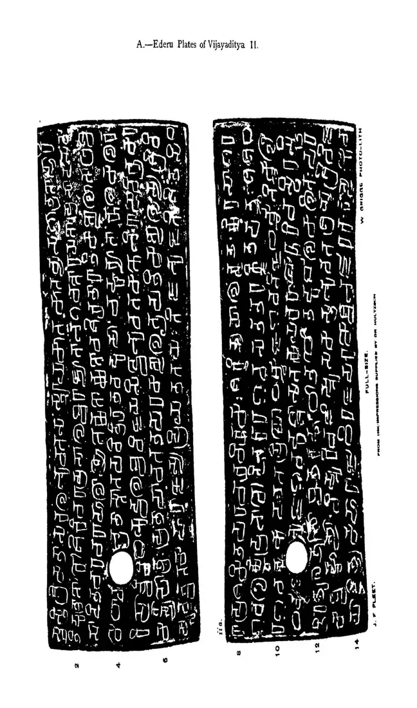
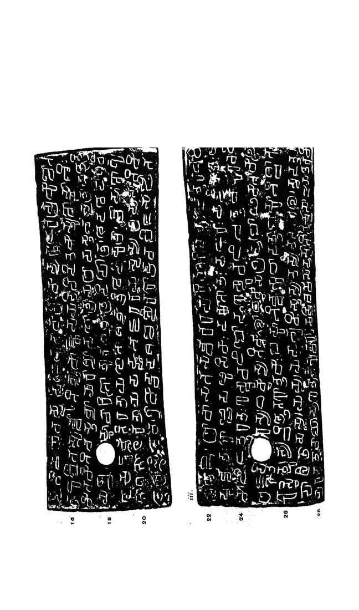
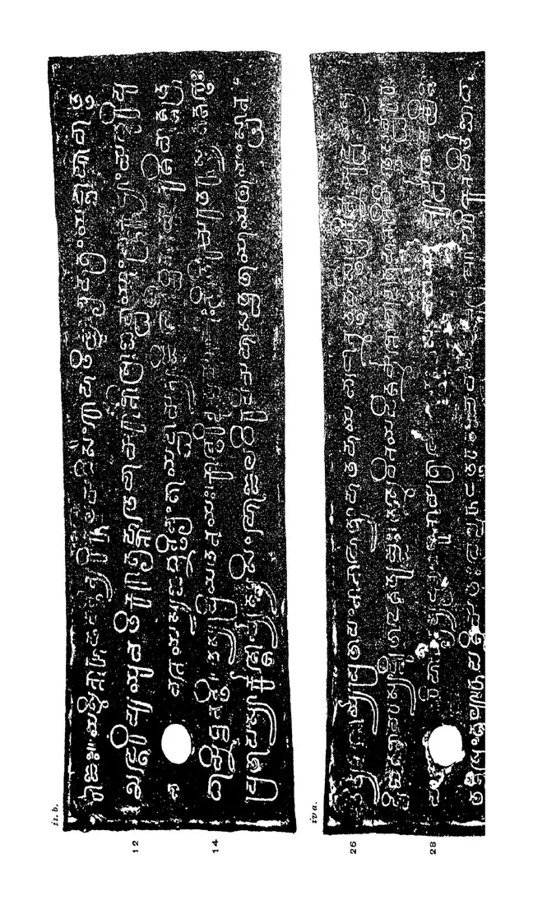
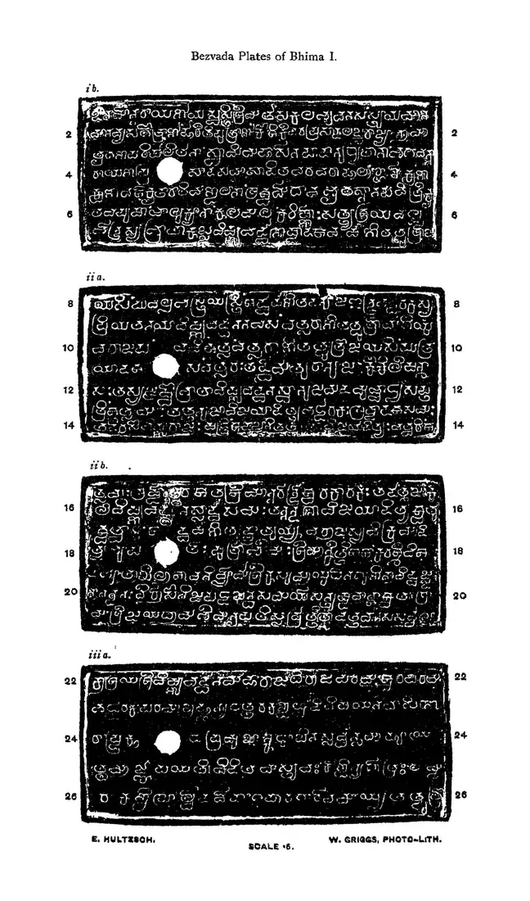
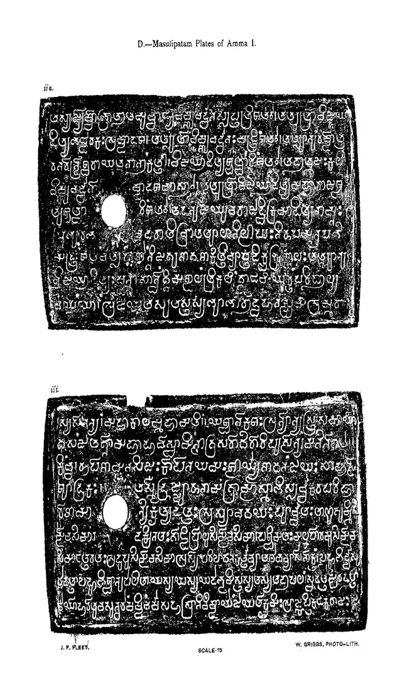
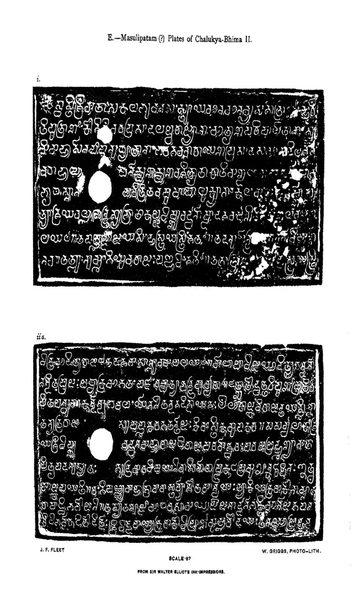
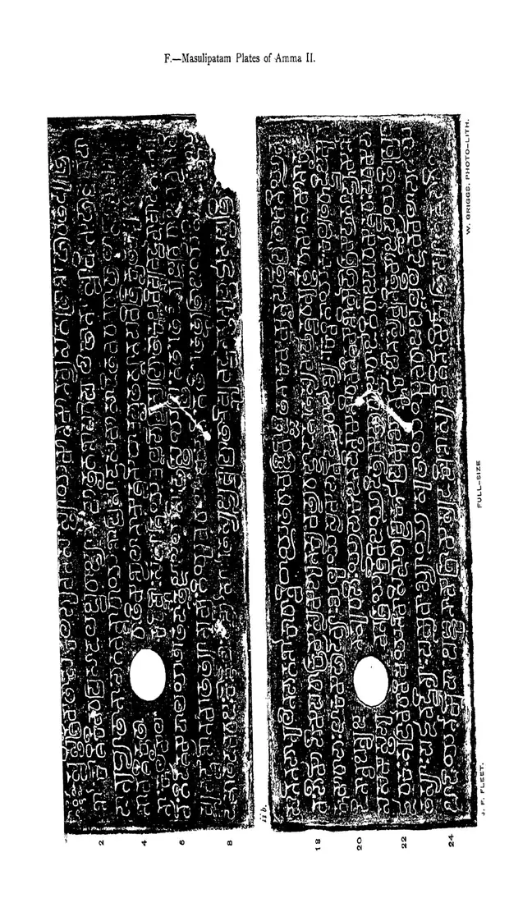

Six Eastern Chalukya copper-plate inscriptions
No. 16.— SIX EASTERN CHALUKYA COPPER-PLATE INSCRIPTIONS.
A.— ÉDÈRU PLATES OF VIJAYÂDITYA II.
[A.D. 799-843.]10These plates were found, about twenty-five years ago, at the village of Édêru (the ' Eed of the Indian Atlas, map 94, long. 80° 48' E., lat. 16° 43' N.) in the Nâzividù Zamîndâri the Kistna district of the Madras Presidency, and they are preserved now in the Maé Museum. The inscription which they contain has been already published, by Pandit S. Natesa Sastri, in the Indian Antiquary, Vol. XIII. p. 55 ff.;11 I re-edit it from an excel impression, supplied to me by Dr. Hultzsch.
These are three copper-plates, the first and last of which are inscribed on one side and each of which measures about 7" broad by 2½" high. The plates have slightly raised
1 One would have expected here asmat-sainmatyâ; see above, Vol. IV. p. 109, l. 19 of the text.
2 Read -pâṭana-paṭu-mahasam-.
3 The aksharas in brackets at the end of lines 19-22 are broken away.
4 Read aṭandy-.
5 This asmâbhih is superfluous.
6 I.e. ṭhakkura-.
7 Here three or four aksharas are broken away.
8 Read -vidhêytîbhûya dâ-.
9 Here follow the four verses commencing Bhûmiñ gaḥ pratigrihñdti, Śankhañ bhadṛ-âsanañ, êkhñ, and Shashtîn varsha-sahasrdñi.
10 Here and below I add the times of the reigns of the donors, from Dr. Fleet's account of the E Chalukya dynasty in Ind. Ant. Vol. XX., to indicate in a general way the period to which each of the six inscri belongs.
11 Compare also Dr. Fleet iu Ind. Ant. Vol. XX. p. 101, H.
and are strung on a ring which had not been cut yet when the impression was taken by Dr. Hultzsch. The ring is about in diameter and thick, and has its ends secured in the base of an elliptical seal, about by in diameter. The seal bears across its breadth the legend srī. Tribhuvanakumśa (for nānikuśa), with, below it, an expanded lotus flower, and, above it, the sun within the moon's crescent.—The writing, which is rather roughly engraved, is, on the whole, well preserved. The characters belong to the southern class of alphabets. and are of the regular type of the period and part of the country to which the inscription belongs. As regards individual letters, it may be stated that for kh (which occurs in pramukhān, l. 15, and in khandīka, l. 21) and for b we have throughout the older square forms, and that, with perhaps one exception,1 the older, not the later cursive, form is also used in the case of l. It may moreover be noted that the sign for b is generally open on the left (or proper right) side—a form of b, which is employed throughout already in the Chipurupalle plates2 of Vishnuvardhana I. of A.D. 632—and that occasionally a similarly open sign3 is used for j, e.g. in Dharmmaj[ā]nuja, l. 11, and a(d)jīāptir, l. 25. Final forms of consouants occur for n in pramukhān, l. 15, and perhaps for m in sva-datt[ā*]m, l. 27, and vasmndharām, l. 28. The size of the letters is between and .—The language is Sanskrit and, with the exception of three verses at the end, the inscription is in prose. The text generally is plain, but contains a number of mistakes, due to carelessness of either the writer or the engraver. Whether the word kātaka, which in line 15 occurs in the place of the usual rāshtrakāta, is correct or not, I am unable to decide. In respect of orthography, it may suffice to state that the Dravīdian l is used in kaṭudhauta, l. 12, and in the names Chalukyānām, l. 4, Palla-bhatf[ā*]ruk[ā*]ya, l. 20, and Bolarenduvati, l. 24; that the sign of the medial ā is frequently omitted;4 and that the word padma is spelt patma, in line 9.
The inscription is one of the Eastern Chalukya Vijayāditya [II. Narēndrampigarāja], the son of Vishnuvardhana [IV.] and son's son of Vikramarāma (i.e., apparently, Vijayāditya I.). It records the grant, on the occasion of a solar eclipse, of part of the village of Va[nđ]rupite[y]u in the Kaṇdēruvāđi-vishaya, to a Brāhmaṇ named Palla-bhattāraka, an inhabitant of Minamini. The Ájñapti (or dātaka) of the grant was Bołama.
The inscription is not dated. Of the localities, none of which have been identified, the Kaṇdēruvāđi (or vātī) vishaya is mentioned in South-Ind. Inscr. Vol. I. p. 40, l. 43, and p. 45. l. 21, and was most probably mentioned also at the end of line 16 of the inscription published ibid. p. 33 and Ind. Ant. Vol. XX. p. 415, which mentions the villages of Va[nđ]rupite[y]u5 and Korṇaparu (or parru) of the present inscription.6 Below, p. 129, text l. 23, mention is made of the Uttarakaṇdēruvāđi vishaya.
1 I refer to the sign for l, used in -gaṇ-dlakantāya in line 20, which comes very near to the later cursive form.
2 See Plate xxvii. of Dr. Burnell's South-Indian Paleography. Occasionally the open form of the square b occurs also in other early Eastern as well as Western Chalukya inscriptions. It is met with also in Pallava and Eastern Gaṅga inscriptions, and is used throughout in the Chikkulla plates of Vikramēndravarman II. (above, Vol. IV. p. 195), while in the Gōdāvarī plates of Prīthivimūla (Jour. Bo. As. Soc. Vol. XVI. p. 116) it occurs only once or perhaps twice, out of six times.
3 On the open j see below, p. 122.
4 The only important omission of the sign for ā occurs at the end of line 5, where it might seem doubtful whether the proper name, given there, should be read Vikramarama or Vikramarāma. In favour of the former reading one might perhaps quote the name Vishipurama which occurs above, Vol. IV. p. 310, ll. 3 and 4 of the text; but the fact that in the present inscription the name is immediately preceded by the word abhirtma, in my opinion, renders it certain that Vikramarāma is really intended.
5 See below, p. 120, note 10.
6 With the name Benđuvati in line 24 of the present inscription one might compare Benđu(Int)vnetdala in Ind. Ant. Vol. XIII. p. 186, ll. 18 and 21.
TEXT.1
First Plate.
1 Svasti [*] Śrīmatām sakala-bhuvana-saṁstūyamāna-Mānavyasagōtr[â*]pām Hārī-
2 tiputrānām 2Kausīki-varaprasâ[dâ*]-labdha-rājyānām bhagavan-Nār[â*]yaṇa-prasāda-
sam[â*].
3 sādita-vara-varāhalāñchhan-ēkshaṇa-kshaṇa-vaśikrit- ār â ti m a n ç a l â n â m 3 asva-
4 mēdh-âvabhrītâ(tha)snāna-pavitri(trī)krita-vapushām Chaĵukyānām kulam=alarīka-
5 rishṇô[r]= vvividha-yuddha-labdha-vijayasiddhé[r*]= bhuvana-mauô-bhirāma-
Vikramar[â*]-
6 masya pautrah pratâpâvanata-paramaṇdala-nripatimaṇdalasya śrī-Vi-
7 sh[ṇ]uvandha(rddha)na-mah[â]rājasya priya-tanayah4 nija-bhuja-niśit-[â]sidh[â]-
Second Plate; First Side.
8 râ-prasāmita-parachakra-vikramah 5śak[t]itray-âlamkrita[h] kshīra-sâgara
9 iva Lakshmī-prabhâ(bha)vô dinakara iva satata-rañjita-patmah6 śaśadha-
10 ra iva [ku]mudavana-priyô Dharmmaja iva nija-dharmma-nirmmalô
11 Dharmmaj-[â]nuja iva Duśśásana-kshaya-karah7 Mêrur=iva sthira-sthi-
12 tir=atula-tulâdhrita- k a ļ a d h a u t a - d h a u t a - d u r b a l a - m a l i n a h8 para-
13 mabva(bra)hmanyô Vishnu(shṇu)r=iva jishnu(shṇu)[h*] samastabhuvan.
[â*]śraya-śrī-Vija-
14 yâditya-mahârâjâdhir[â*]ja-paramêsva[ra*]- b h a ṭ ṭ â r a k a h Kaṇđeĵuv[â*]-
Second Plate; Second Side.
15 đi-vishayê 10Va[ṇ]drupiĵe[y] u-nāma-grâmasya kûṭaka-pramukhâ;
16 11kuṭumbinas=sarvvân=ittham=âjñâpayati [*] Viditam=astu vô=smâbhih1
17 Minamini-v[â*]stavyâya Kâśyâ(śya)pa-gôtrâya Âpastabham-sûtrâya Taitrī-
18 ya-bva(bra)hmachâriṇê 14Tu(tú)rkaśarmma-trêdi-pautra 15 vêda-vêd[âm]ga-vi
1 From impressions supplied by Dr. Hultzsch.
2 Read Kausikt.
3 Read 9nâm=atva.
4 Read tanayô.
5 The third akshara of this word looks as if tya had first been engraved and then altered to tra.
6 Read -padmah; Mr. Natesa Sastri read rakshita-padmah. The sun always reddens the water-lilies; the king always pleased the goddess at fortune (Padmâ) or 1,000 billions (padma) of people. The moon is dear; the night-lotuses; the king was fond of fostering the happiness of (the inhabitants) of the earth.
7 Read -karb.
8 He washed off the dirt of the weak (i.e. the poverty of the needy) by the unprecedented (amount of) go and silver (kaṇdhauta) which (equivalent to his own weight) was placed on the balance.1 Compare Ind. A, Vol. XIII. p. 186, l. 8; aneka-tulddhrita-éđtakumbha-niérâṇan-[â*]vaddata-śari(rt)rasya.
9 The impression looks as if originally, between the aksharas ṇđe and xu, the sign of visarga had be engraved.
10 Mr. Natesa Sastri omits this name. By Dr. Fleet (Ind. Ant. Vol. XX. p. 101) it was read Vamrupireyu Vamrupileyu.4 The village is the same which, as situated west of Korrapaxxu (see below, l. 28), is mentioned in lj 44 of the other known grant of Vijayâditya II., where the name by Dr. Hultzsch was read Vâ[ṇ]drâ[â]pe[dayr]t], a by Dr. Fleet Vâṇđrâpedayr; see South-Ind. Insor. Vol. I. p. 84, and Ind. Ant. Vol. XX. p. 417.
11 The sign of anuvôra in this word is placed within the sign of the vowel i of bi.
12 Read vah! Amdbhir.
13 Read -gôtrây-Âpastañba-sûtrâya Taittiriya-brao (or, perhaps, 9ya-sabrao).
14 Mr. Natesa Sastri read this name Turkavarmma, but the third akshara is distinctly sa in the impressi. The name Tûrkakarman occurs below, p. 124, text line 20, and in a Pallava inscription, Ind. Ant. Vol. V. p. 1 l. 20.
15 Read -trivêdi-pautrâya.
Plate 1 is bound after this page.
Plate 2 is bound after this page.
| 19 dê shatkarmma-niratâya | 1Dônaša[r]mma-trivêdi-putrâ |2 lvá(lorâ hmana-gra-3 |
| 20 na-gap-âlaka-ntâya4 | Palla-bhatt[â*]rak[â*]ya sú[r*]lyyagrahana-nimi- |
| 21 ttê5 asminn=èva | grâmê 6dvâdaša-khandika-kôdrave-bíja-sam-thânah |
Third Plate.
| 22 [kshétra][ñ=cha ?]7 | | âvásana[m] | sarvva-kara-parihâri8 | daf[toh] | f | |
| Chat[u]rj-avadhi9 | |||
| 23 pûrvvatah Korraparu-símah(mâ) daksha(kshi)natah[ta]tûkah pashinrutuh Ra- | |||
| 24 mâti uttaratah Renvu(nđu)vati Bolarenđuvati [l*] | Étic10 chatur-avathi [?*] | |||
| 25 11A(â)jñaptir=asya dharmmasya nirmmalô dharmma-sagratihah12 [l*] | |||
| Bolama-nâma(mâ) lô- | |||
| 26 kê=smit(n)= punya-chittê(ttô ?) nar-ôttamah[|| 1*] Bahubhir-vvasudhâ dattâ bahubbiś=ch=ânu- | |||
| 27 pâlitâ[l*] yasya yasya yadâ bhu(bhú)mis=tasya tasya tad[â] phala[?*] |(||)[2*] Sva-datt[â*][m] | |||
| 28 para-dattâm vâ yô harêtu13 vasundharâ[m][l*] shashtiñ varsha-sahasrâgi vishtâ(shthâ)sâm(yâm) jâyatê k[ri]mi[h|| 3*] |
ABSTRACT OF CONTENTS.
The son's son of Vikramarâma (l. 5), who adorned the family of the Chalukyas (l. 4) who are of the Mânavya gôtra and are Hâritiputras (l. 1), and who obtained the success of victory (vijaya-siddhi) in various battles:—
The dear son of the Mahârâja Vishnuvardhana (l. 7):—
The asylum of the whole world, Vijayâditya (l. 18), the Mahârâjâdhirâja, Paramétrari and Bhattâraka, who is most devoted to religion and is victorious like (the god) Vishnu, then issues a command to all the cultivators, headed by the Kûtakas, of the village of Va[nđ]ru-pitê[y]u in the Kanđeruvâđi-vishaya (l. 15):—
“Be it known to you! On the occasion of an eclipse of the sun (l. 20), a field in this village, the extent of which is such that it may be sown with kôdrava14 grain to the amount of twelve khandikas, (and ?) a dwelling-place have been given by Us, with exemption from all taxes, to the Brâhman Palla-bhattâraka, an inhabitant of Minamini (l. 17), who belongs to the Kâśyapa gôtra and Âpastamba sútra, and is a student of the Taittiriya Vêda, a son of the student of three Vêdas Dônašarman and son's son of the student of three Vêdas Tûrkasarman.”
The four boundaries are (l. 22): On the east, the boundary-line of Korraparu; on the south, a tank; on the west, Ramâti; and on the north, Reñduvati (and ?) Bolarenđuvati.
1 This is the actual reading, and the name occurs, spelt in the same way, in other inscriptions; the correct spelling would be Drônašarmma-.
2 Read -putrâya.
3 Perhaps the intended reading is brâhmandya gu-.
4 Read -âlamâkritdya.
5 Read ttê-sminn-.
6 Instead of khandika Mr. Natesa Sastri read vêndika; the correct reading has been already given by Dr. Fleet, in Ind. Ant. Vol. XX. p. 106, note 20. Compare also ibid. Vol. XIII. p. 250, l. 27 of the text, rdja-mdnôno doddaka-khonđi(J)-kôdrava-btja-vêpa-kshétram; and Vol. XIV. p. 55, l. 116, dhânya-khandakâsi.
7 The engraving is quite clear here, but I cannot read the akshara in these brackets with any confidence. The following sign of punctuation is superfluous. After dvâsanam one would have expected cha-.
8 Read -parihârlkritya.
9 Instead of this one would have expected Tasya chatodârô-vadhayah, or only Tasy-âvadhayah.
10 Apparently intended for êtê chatvârô-vadhayah-.— I suspect that some similar phrase is intended in line 45 of the other grant of Vijayâditya II. (mentioned above, p. 120, note 10), where the published texts have cha[turviñkatyai] datta[k*] and êtêshâm=apy=ava(?)tta.
11 Metro from here to the end: Slôkna (Auushitabh).
12 Read -saingrahê.
13 Originally harêti appears to have been engraved; read harêta.
14 Kôdrava is stated to be ‘an inferior sort of grain, Paspekulu frumentaceum.’
Lines 25-28 give the name of the Ájñāpti, Bolama, and contain two benedictive and imprecatory verses.
B.—MASULIPATAM (?) PLATES OF VIJAYĀDITYA III.
[A.D. 844-888.]
There is no definite information as to where these plates were found, or what became of them; but, judging from the dimensions, this may perhaps be a grant which is entered as follows in a memorandum of Sir Walter Elliot:—“5. Inscription on 5 plates, received from Mr. Porter, Collector of Masulipatam, 19th December 1846; Vijayāditya. Seal, a Boar, and Tribhuvanāinkuśa. Length 9½; breadth, 3¾. Weight, 258 rupees.” I edit the inscription1 from Sir W. Elliot's own impressions, supplied to me by Dr. Fleet to whom I also owe the preceding information.
These apparently are five copper-plates, the first and last of which are inscribed on one side only, and each of which measures 9½” broad by about 3¾” high. They were strung on a ring for which there is a hole on the proper right side of each plate. The writing on the original plates undoubtedly is well preserved, but the impressions contain some partially illegible passages, owing to the fact that many letters in the original are blocked up with hard rust, which was not cleaned out before taking the impressions.2—The writing is well done, and carefully engraved. The characters belong to the southern class of alphabets, of the time and part of the country to which the inscription belongs. As regards individual letters, the chief points to note are, that for kh and l everywhere the later, cursive forms are used, while for b we have the older square form; and that the signs for both b and j throughout are open on the left (or proper right) side. Of the open b I have spoken above, p. 119. The open j is used occasionally already3 in the Édèru plates of Vijayāditya II. (above, p. 120), and in the Ahadanakaram plates of Vishnuvardhana V. (Ind. Ant. Vol. XIII. p. 186, e.g. in kanadirajul, l. 30). It is also found now and then, more or less developed, in Eastern Gaṅga inscriptions, e.g. in lines 1 and 2 of the Chicacole plates of Indravarman of the year 146 (?) and in line 25 of the Vizagapatam plates of Dêvèndravarman of the year 254 (ibid. Vol. XIII. p. 123, and Vol. XVIII. p. 144); and it occurs pretty frequently in the Chikkulla plates of Vikramèndravarman II. (above, Vol. IV. p. 195), which have also the open b. And both the open j and the open b are used throughout in the two Bâna inscriptions, published in Ind. Ant. Vol. X. p. 39, which therefore, in this respect, come nearer to the present inscription than any other records examined by me.4 Of final cousonants which are not joined with a following letter our inscription only contains t (in kênachit, l. 29) and n (in pramukhân, l. 18, pârthivêndrân,
1 For an account of the contents of the inscription see Dr. Fleet in Ind. Ant. Vol. XX. p. 103, J.
2 Excepting the word which precedes the name Tûrkkašarmanaṇ in line 20, and one or two aksharas in the names of villages, the illegible passages cause little difficulty.
3 I do not venture to quote with confidence the Nellore district plates of Vishnuvardhana II. of A.D. 664 (Ind. Ant. Vol. VII. p. 186), where the open j seems to occur in Bhadravája, l. 16, and svamukh-ájñâ, l. 67.—The Tables in Dr. Burnell's and Prof. Bünler's works on Indian palæography contain no specimen of the open j.
4 On the Plate facing page 167 of Ind. Ant. Vol. X. there are photolithographs of two short Patṭadakal inscriptions, one of which has the ordinary open j (consisting of three separate lines), while the other furnishes an instance of that peculiar form of the open j, which has a vertical line in the middle and three horizontal lines to the right of the vertical line. The origin of the latter form of j, which, together with the ordinary open j, is used e.g. in the spurious Merkara plates (ibid. Vol. I. p. 362), is well shewn by the different forms of j, employed in the Chicacole plates of Dêvèndravarman (ibid. Vol. XIII. p. 275; compare the different forms of j in e.g. Nâgarája, l. 23, nija, l. 7, and víjaya, l. 1). The origin of the later, cursive j, in my opinion, is equally well shewn by some forms of j in the Alamayda plates of Anantavarman of the year 804 (above, Vol. III. p. 18; compare the forms of j in e.g. jñita-jaya, l. 6, and nija, l. 8). Perhaps I may state here that a form of j, which comes very near indeed to the later cursive j, is used already in the grant of Attivarman (Ind. Ant. Vol. IX. p. 102, e.g. in jana, l. 3, and yxjus, l. 6), which shews an early form of the Grantha alphabet and is, in my opinion, not later than A.D. 650.
I. 33, pratápaván, l. 35, and brímán, l. 38). Of these two, t is denoted by the ordinary sign for ta and n by a slightly smaller form of the ordinary sign for na, with the sign of viráma, which hardly differs from the sign of the superscript r, placed above them. The size of the letters v between 11/8 and 11/4.— The language is Sanskrit. In addition to four benedictive and impressory verses and two others which give the names of the Ájñapti and the writer, the text contains five verses eulogizing the donor and his predecessors and the donee; the rest is in prose. Verse 3 does not admit of a proper construction, and in verse 5 an essentially necessary word is omitted. The orthography calls for no remarks.
The inscription is one of the Eastern Chálukya Vijayáditya [III. Gunaka], the son of Vishnuvardhana [V.] who was the son of Vijayáditya [II. Narèndramrigarája], here also called Cháluky-Árjuna. It records that, apparently as a reward for advice which was given in the matter of the defeat of an enemy named Mañgi, the king, on the occasion of a lunar eclipse, granted the village of Tranda[pa?]ru in the Gudravára-vishaya to the Bráhman Vinayadíarman, a son of Dámódaraśarman and son's son of Túrkaśarman who was an inhabitant of Urputúru. The Ájñapti of the grant was Pândaránga (whose name occurs again below p. 130, text l. 46, where a grandson of his is mentioned), and the writer Kaṭte[y]a.
The inscription is not dated. Of the localities, none of which have been identified, the Gudravára vishaya is also mentioned below,1 p. 137, text l. 22, and in South-Ind. Inscr. Vol. I. p. 48, l. 25. Below, p. 141, l. 22, the name of the district is spelt Gudrávára; and an earlier form of the name is Gudrahára, in Ind. Aut. Vol. XIII. p. 138, l. 17, and Vol. VII. p. 191. l. 12, and a later one Guddaváđi, ibid. Vol. XIV. p. 53, l. 77, and Vol. XIX. p. 431, l. 79.2 The name of the village of Urputúru3 occurs ibid. Vol. XX. p. 416, ll. 25 and 35.
On the rather scanty pieces of historical information furnished by the inscription compare Dr. Fleet, ibid. Vol. XX. pp. 100-103, and Dr. Hultzsch, above, Vol. IV. p. 226.
TEXT.4
First Plute.
| 1 | 5Svasti [*] Háritipu- | Śrímatám | sakala-bhuvana-samstúyamána-Mánavyasagótrápám |
| 2 | trápám | Káuśiki-varaprasáda-labdha-rájyánám | Mátrigana-paripálitánám Svāmi-bhagavan-Náráyana-prasáda-samśádi- |
| 3 | Maháséna-pádánudhyátánám | ||
| 4 | ta-vara-varáhaláñchhan-ékshana-kshana-vaśikrít-śrátimanđalánám=aśvamédh-á v a b h ř i- | ||
| 5 | [tha]snána-pavitríkřita-vapushám | Chálukyánám | kulam-alamkarishyób samastabhuva- |
Since writing the above, I have been able to examine impressions, kindly sent to me by Dr. Hultzsch, of the inscription (or inscriptions) on the Madras Museum plates described in Mr. Sewell's Liste of Antiquities, Vol. II. p. 24, No. 174. I find that lines 1-33 of these plates contain a complete inscription of a Chója chief named Śríkaṇṭha, who is recorded to have given the village of Mandara to the god Śiva (under the name of Prélísvar!); and that in this inscription, exactly as is the case in the inscription B, here edited, the letters j and ð throughout are denoted by the ordinary open j and the open ð, while for k and l the later cursive signs are used.— As Mr. Sewell has not been well served by his native assistant, I may mention that the inscription referred to—it is rather carelessly written—gives the following line of chiefs, who are said to belong to the family of the Chója Karikála: Sundaramanda, Navaráma, Ekeyamma, Vijayakáma, Vtrárjuna, Agrapipidugu (!), Kókijí, Mahèndravarman, Elajólja (!), Npripakáma, Divákara, and Śríkantha who is described as Chója-kularya Edwah. The inscription is not dated, and contains no historical information except what may be furnished by the given names.
1 Above, Vol. IV. p. 49, verse 18, a Gudravára-dvaya or ' pair of (districts called) Gudravára' is mentioned.
2 [On Guddavádi see above, Vol. IV. p. 88, note 5.— E. H.]
3 Perhaps this is ' Vapputuru,' Indian Atlas, map 76, long. 80° 22' E., lat. 15° 57' N.
4 From Sir W. Elliot's impressions, supplied to me by Dr. Fleet.
5 This word was perhaps preceded in the original by an ornamental design.
Second Plate; First Side.
| 6 | náśraya-śrí-Vijayāditya-mahárájasya | sakala-digam[ga]ná-lalátikáyamāna |
| 7 | yaśōmaṇḍalasya1 | Gamgakula-kālānalasya kalikāla-mada-bhañjanasya Chāluky-Ā- |
| 8 | rijjuna-nāmadhėyasya | | 2Utkháta-sátataravāri-vidārit-ārināgādhipasya ha- |
| 9 | riṇādhipa-vikramasya [[*]] | śókákul-ārivanitá-nayanāmbu-sékaih kōpānalah praśamam=é- |
| 10 | ti vinā na yasya |(II) [1*] | Tasya priya-tanayah sarvvalókáśraya-śrí-Vishṇuvarddhena3-mahá- |
Second Plate; Second Side.
| 11 | rájah || | 4Yasminn=ārúdha-dantiny=ari-kulam=adhisamíróhati kshímâbhríd-agram yad-báháv=átta- |
| 12 | khađgê ripuyuvati-kará gríhṇatê chámaráṇi [[*]] | ábaddháyám bhírukutyám madhu ripu- |
| 13 | bhavanê yasya badhnanti bhíringâ yad-dhámany=ájibhérí-dhvananam=anu śiváś-šatru- | |
| 14 | dhámni dhvananti || [2*] | Tasya priya-tanayah | Kántér=indúh6 kshamáyáh kshitír=amara-tarus=tyága-šaktéh |
| 15 | pratápasy=árkkaś-šauryyasya simíhô jaladhir=api mahása[t*]tvatáyâ yath=áyam [[*]] sthánam |
Third Plate; First Side.
| 16 | syád=éyam=anyan-na hi bhavati mam=ét-íva bhítan=nitá[nta]ín nityam sarvv-átmanâ yamí prabhajati vimu- | |
| 17 | khê yatra n=ánya-pratishthamí |(II) [3*]6 | Ša samastabhuvanáśraya- śrí-Vijeyāditya-mahárájah7 Gudravāra- |
| 18 | vishayê sarvván=éva ráshṭrakúṭa-pramukhán kuṭumbina ittham=ájñâpayati [[*]] Vidita- | |
| 19 | m=astu vó=smábhih Urpputúru-vástavyasya Kauśika-gótrasya Āpastamba- | |
| 20 | sútrasya Veṇni(ṇṇi)[yá?]ma . . sya8 Túrkkaśarmmaṇah pautráya shaṭkarmma- |
Third Plate; Second Side.
| 21 | niratáya | Taittiríya-gríhasdhá(sthá)ya véda-védáinga-vidah Dámóda |
| 22 | raśarmmaṇah putráya | | Yash=shapṇán=déhabhájá[m=avaj]i[ta]-jagatá[m= abh]yajaishíd=aríṇám |
| 23 | varggam yamí prápya Pamkéruhabhuvam=api cha vyasmara[d=brahma]- lakshmíh [[*]] góshthí-jósham gu- |
1 Originally máṇdalasya was engraved, but the á of má has been struck out.
2 Metre: Vasantatilaká.
3 Originally, over the v of varđdhana, part of the vowel í was engraved.
4 Metre of verses 2-4: Sragdhará. 5 This sign of visarya was originally omitted.
6 The general sense of the verse is, that beauty and the rest eagerly pay homage to the king, aware that eve the moon éic would not be so suitable a home for them; but the verse, in my opinion, does not admit of proper construction.
7 Here, and in other places below, the rules of sañāhi have not been observed.
8 The akshara which precedes the syllable sya is quite illegible.
9 The two aksharas in these brackets are illegible, but have, I think, been correctly supplied; compa brahmairí-bhdvara-dyutiḥ, 'resplendent with holiness,' in South-Ind. Inscr. Vol. I. p. 45, l. 26.
Plate 3 is bound after this page.
24 nánám=abhajata nikarô yatra cha kv=ápy=alabdham na[r]mm-álápê-pi rápi na bhavati vitathâ satya.
25 sandhasya yasya |(||) [4*] Hatvá1 Maingim vijita-sakal-áráti-bhúpála-varggam rág-ódrékád=dhasita-npipa.
Fourth Plate ; First Side
26 ti-tyâ[ga]-ś[au]ryya-pratápam [|*] náná-héty-áhata-haya-bhat-ónmatta-hasti-prakírnuê(rnnê) yuddhê yasya
27 dvi[ja]-gana-varasy=ádbhut2-ádéáa-tushtah3 |(||) [5*] Tasmai Vinayadísarmmapá chandragrahana-nimittê sarvva-kara.
28 parilháríkritya Traṇda[pa?]řu-náma-grá[mô da]ttaĵ [|*] Tasy=ávadhayaĵ púrvvatô dakshipa.
29 tas-cha Aṅgalúru pašchimataĵ Ve[1]púru uttarataĵ Chavi[ta?]paru [||*] Asy-ópuri kénachit bádhá
30 na karttavyâ [|*] yaĵ karôti sa pañchabhiĵ mahápátakair=yynktô bhavati [||*] Vyásén=ápy=uktam[|*] *Sva-dattám
Fourth Plate ; Second Side.
31 para-ilattám và yô haréta vasundharám[|*] shashtí-varaha-sahasrápi vishtá(shṭhâ)yám jáyatê krimiĵ |(||) [6*] Bahu.
32 bhir=vvasudhâ dattá bahubhiś=ch=ânupálitá [|*] yasya yasya yadá [bhú]mis-tasya tasya tadá phalam[|| 7*]
33 *Sarvván=étán=bhávinaĵ pártthivéndrán bhúyô bhúyô yáchatê Rámabhadraĵ [|*] sá-
34 mányô=yan=dharmma-sétur=nnrípánám kálê kálê pálanĵyô bhavadbhiĵ || [8*]
*Ájñaptir=asya dharmma.
35 sya vikram-ákránta-sátravaĵ [|*] dvitĵya iva Bíbhatsuĵ Páṇdaráingah pratápuván |(||) [9*] *Šivam=a.
Fifth Plate.
36 stu sarvva-jagatám parahita-niratá bhavantu bhúta-gapá[ĵ |*] [d]ósháĵ prayántu násarn
37 tishṭhatu suchiram jagati dharmmaĵ || [10*] Putraĵ8 érí-Mádha[va*]sya spu(sphu)ṭam=i.
38 dam=alikhach=chhásanam Katṭa[y]-ákhyaĵ9 érímán sachchhíla-ynktô
39 nrípavara-Vijayáditya-ráj-ájñay[á tu | práptaĵ pára]10m ka[lá]nám kritishu cha kuśalô-tya-
40 ntam=Ísána-pautrô náná-sástr-árttha-[sá]li parahita-niratô hémakár-ágraganyaĵ || [11*]
ABSTRACT OF CONTENTS.
The asylum of the whole world, the Mahárája Vijayáditya (l. 6), who adorned the family of the Chálukyas (l. 5) who are of the Mánavya gótra and are Háritiputras (l. 1), was a fire of destruction to the Ganga family, and, as he broke the frenzy of the Kali age, was named Cháluky-Ārjuna (l. 7).
1 Metre : Mundákrántá.
2 Over the akshara dbhu the vowel i has been engraved, but it seems to have been struck out again.
3 The subject of the sentence apparently is Vijayádityaĵ, which must be supplied from the context.
4 Metre of verses 6 and 7 : Šlóka (Anushṭubh).
5 Metre : Šilint.
6 Metre : Šlóka (Anushṭubh).
7 Metre : Āryá.
8 Metre : Sragdhará.
9 The letter in bruckets may possibly be m.
10 The aksharas in these brackets are doubtful.
(V. 1.) Valorous like a lion, he with his unsheathed sharp sword split open (the frontal globes1 of) the lordly elephants— his adversaries; the fire of his wrath is not extinguished unless it is sprinkled with the tears of the sorrow-stricken wives of his enemies.
His dear son was the asylum of all mankind, the Mahárája Vishṇuvardhana (l. 10).
(V. 2.) When he ascends his elephant, his enemies ascend the mountain-tops; when his arm takes the sword, the hands of the young women of his adversaries take up the chowries; when he knits his brows, the black bees2 make honey in the palace of his adversary; when the war-drum is sounded in his abode, the jackals howl in the abode of his opponent.
His dear son— who3 excels the moon in beanty, the earth in endurance, the tree of paradise in generosity, the sun in splendour, the lion in bravery, and the sea in greatness of disposition— the asylum of the whole world, the Mahárája Vijayáditya (l. 17), thus issues a command to all the cultivators, headed by the Ráshtrakútas, in the Gudravāra-vishaya :—
“Be it known to you! On the occasion of an eclipse of the moon (l. 27), the village of Traṇḍa[pa ?]ru (l. 28) has been given by Us, with exemption from all taxes, to the Taittirtya householder Vinayadīsarman (l. 27), a son of Dāmōdaraśarman and son's son of the inhabitant of Urpuṭru (l. 19), the . . . 4 Tūrkaśarman, who belongs to the Kanśika gôtra and Âpastamba sútra.
(V. 4.) He has conquered the host of the six enemies5 of mankind who have subdued all the world; when she came to him, the Glory of holiness forgot even the lotus-born Brahman; 6 in his society the assemblage of virtues find pleasure,7 such as they have nowhere experienced; true to his word, he in jest even does not give utterance to false speech.
(V. 5.) When on the field of battle, strewn with horses, soldiers and infuriated elephants that were struck down by various weapons, (the king8) had slain Maṅgi, who had defeated the whole host of hostile chiefs and in the excess of his fury had ridiculed the king's liberality, bravery and power, he was well pleased with the marvellous advice of this best one of the twice-born.”
The boundaries are (l. 28) : On the east and south, Aúgalúru; on the west, Velpúru; and on the north, Chavi[t]a[?]paru.
The rest of the inscription warns the people not to obstruct this grant; quotes three benedictive and imprecatory verses, ascribed to Vyása; (in verse 9) gives the name of the Ájñapti of the grant, Páṇdaráṅga, who for his prowess and valour in war is compared to Bībhatsu, i.e. Arjuna; (in v. 10) contains a prayer for the welfare of the people and the progress of religion; and (in v. 11) records that this edict (śásana), by order of the king Vijayáditya, was written by the foremost of goldsmiths, Kaṭta[y]a, the son of Mádhava and son's son of Íśána.
1 There is no doubt that this was present to the mind of the author of the verse; compare, e.g., Vásavadattā, p. 102, hari-kharanakhara-vidáritakumbhasthala-vikala-védraṇa. According to Dr. Fleet in Ind. Ant. Vol. XX. p. 101, the word négádhipa would seem “to have a double meaning, and to indicate also a defeat of some hostile chief of the Nágas.”
2 The presence of the black bees in the palace of the enemy as well as the howling of the jackals portend evil. Compare Harshacharita, Bombay ed., pp. 180 and 181, vavásiré śivúnám rájayaḥ . . . babhráma bhardmaram paṭalam.
3 I only give the general sense of verse 3, which I cannot construe. The king was mahá-sattva on account of his noble disposition; the sea is so, because it contains a number of big creatures.
4 Here one word, apparently a name, is partly illegible in the original.
5 Compare South-Ind. Inscr. Vol. I. p. 35, note 3.
6 The original has: Pañkéruhabhé; compare, e.g., Ambhéjabheva and Jalajabhava in Ind. Ant. Vol. XII p. 92, l. 40, and p. 98, l. 43.
7 According to the dictionaries, the word jósha, in classical Sanskrit, would seem to be used only as an adverb in the form jósham; but it occurs as a substantive, in the sense of sukha, e.g. in Harshacharita, Bombay ed. p. 159, l. 8.
8 This has necessarily to be supplied; the king, of course, is Vijayáditya himself.
C.—BEZVĀDA PLATES OF CHÁLUKYA-BHÍMA I.
[A.D. 888-918.]These plates were found1 on the 25th June 1897 in the rock-hewn chamber of the quarry-compound at Bezvāda, in the Kistna district of the Madras Presidency, and were sent to Dr. Hultzsch by Mr. J. K. Batten, I.C.S., the Acting Collector of the Kistna district. I edit the inscription which they contain from an excellent impression, supplied to me by Dr. Hultzsch.
These are five copper-plates, each of which measures about 7" broad by 3" high. Plates 2-5 are inscribed on both sides, but the writing on the second side of the fifth plate is less than half a line. The first plate is inscribed on the second side only, and on the first side contains. from the proper right to the left, representations of a couch-shell, the sun, and a club.—With perhaps the exception of the first plate, the plates are quasi-palimpsests. On the plates 2-4 the writing which had first been engraved on them is well beaten in, so that only few traces of it remain; but on both sides of the fifth plate the original writing is still so clearly seen that much of it may be made out without any difficulty. The characters of this original writing closely resemble those which were afterwards engraved on the plates; and this, together with the fact that the words at the bottom of the second side of the fifth plate are sa sarvvalókátraya-trí-Vishnuvardhana-ma[hárá],2 in my opinion, leaves no doubt that these plates originally were used for another grant of Bhíma I., which either was not completed or for some reason or other was cancelled.—The plates have high rims, and are strung on a ring, which had not been cut yet when this record came into Dr. Hultzsch's hands. The ring is about 4 in diameter and thick, and has its ends secured in the back of a circular seal, about 2 in diameter. The seal bears, in relief, the legend trí-Tríbhuvan[d*]-îmkušaħ, with a flower below it, and, above it, a couchant boar which faces to the proper left and is surmounted by the sun and the moon's crescent, while behind it is an elephant-goad.—The writing is well preserved throughout. The characters belong to the southern class of alphabets, of the time and part of the country to which the inscription belongs. As regards individual letters, kh, j, b and l are denoted throughout by the later, cursive signs; but for the initial i (in Indra, l. 8) we have here still the earlier form, consisting of two horizontal dots with a wavy lino above them. Of special signs for final consonants the inscription only contains one, for n (in dattaván, l. 21, but not in pratápaván, l. 46); and of letters which occur more rarely, the initial é, ai and ð (in Íšúnataħ and Áiriviya-guntha, l. 32, and óñ, l. 1). The size of the letters is about .—The language is Sanskrit, except that some Telugu words occur in the proper names. In addition to five benedictive and imprecatory verses, the text contains one verse referring to the donor and another which gives the name of the Ájñapti; the rest is in prose, but in lines 15 and 17 reads as if the official who drew up the grant had had verses before him. The text is full of minor mistakes. In respect of orthography, it will suffice to note the doubling, before y, of t in Sattyátraya, l. 6, and Vijayádittya, l. 18, of n in tánny-éva, l. 37, and of l in nirmmállya, l. 44; the doubling of s before kin yašasskarápi, l. 44; the doubling of m after anusvdra in tésháñ mmayá, l. 40; the employment of t and d for the corresponding aspirates in saprárttitó (for samprártthitó), l. 21, párttivéndrán, l. 42, dharnmártta, l. 44, and sóduħ, l. 45; and the use of the palatal for the dental sibilant in sahabrápi, l. 36.
The inscription is one of the Eastern Chálukya Bhíma [I.] Vishnuvardhana (usually called Chálukya-Bhíma3), of whom no other inscription has yet been found. After having stated (in verse), in a general way, that at the time of his coronation (patṭabandha) king Bhíma gave away a village in perpetuity, it formally records that the Mahárájádhirája Vishnuvardhaná granted the village of Kúkiparṇu in the Uttarakaṇdeṛuváđi-vishaya to a student
1 The plates were found together with a set of plates professing to contain a grant of Vishnuvardhana III, which I consider to be spurious.
See line 21 of the text of the present inscription.
2 See Dr. Fleet in Ind. Ant. Vol. XX. p. 103.
of the kramapátha named Pôtamayya, who (or whose grandfather) was an inhabitant1 of Ummarakanṭhibôl. The Ájñapti of the grant was Kađeyarája (a grandson of the Pâṇdarânga of the preceding inscription), and the writer Kopđáchârya.2
The inscription is not dated. The localities mentioned in it have not been identified.3
It may be noticed that, up to the present, this is the earliest record which gives the full historical genealogy, with the lengths of the reigns,4 and that this grant for Bhítma I. gives the second name Vishnuvardhana.
TEXT.5
First Plate; Second Side.
1 Óm namô Nna(ná)ráyapáya [||*] Svasti [|*] Śrímatám sakala-bhuvana-samśtúyamâna.
2 Mânavyasagôtrânâm Hâritiputrânâm Kausikî-varaprasâda-labdha-râjyânâm Mâtrigaṇa-paripâlitânâm Svâmi-Mahâsêna-pâdânudbyâtânâm bhagavan-Nâ.
4 râ yaṇa - prasâ da-samâs âdita-vara-varâhalâmñ ch han.6 êk shaṇa.
5 kshaṇa-raśikrî-ârâtimaṇdalânâni7 asvamêdh-âvabhrîthasnâna-pavitrîkî
6 ta-vapushâm Châlukyânâm kulam-alumkarishpôh Sattyâśraya-valla
7 bhêndrasya bhrâtâ Kubja-Vishnuvarddhanô-shtâdaśa varshâñi8 [|*] tat-putrô Ja
Second Plate; First Side.
8 yasimgha(ha)-vallabhas=trayastriinśard-varshâñi9 [|*] tad-anuja-l
Indra-bhaṭṭarakasya
9 priya-tanayô Vishnuvarddhana(nô) nava samvatsarâñi [|*] tat-putr
Maṅgi-yu-
10 varâja[ħ*] pamchavirnśat-samvatsarâñi11 [|*] tat-putrô Jayasimgha(has)=tr
11 yôdaśa sâmvatsaraħ12 [|*] ta[d*]-dvaimâtur-ânû(nu)jah Kokkili(liħ) shan(ṇ)=m
12 sah13 [|*] tasya j[y*]jêsbthô bhrâtâ Vishnuva[r*]ddhana sv-ânujamadam-
uchchâtya sapta-
13 trimśat-sam[â]ħ15 [|*] tat-tanujô Vijayâdittya-bhaṭṭarakah16 ashtâda
sam[â*]ħ [|*]
14 tad-aurasô Vishnurâjaħ shaṭtrimâsad-abdâni17 [|*] tat-sutô Vijayâdity
chatvârimnśa-
Second Plate; Second Side.
15 18t-sam[â*]ħ 19ashtôttarasata-śrímâ(ma)n-Narêndrêsvara-kârakaħ [|*] tad-âtmajah E
16 li-Vishnuvarddhanas-sârddha-samah20 [|*] tan-nandanô Vijayâdityas-cha.
1 Literally, 'a muster of the Vêdas and Vêdângas' (l. 26).
2 This name occurs again as the name of a writer ibid. Vol. XIII. p. 250, I. 37.
3 Regarding the name of the vishaya, see above, p. 119.
4 See Dr. Fleet in Ind. Aut. Vol. XX. p. 266.
5 From impressions supplied by Dr. Hultzsch.
6 Read lâñchhûn.; the sign of anusvâra may have been struck out already in the original.
7 Originally maṅṇda seems to have been engraved; read lânâm.
8 Here, and with similar accusative cases below, we have to supply a verb meaning 'be reigned.'
9 Read îtatâm varshâñi. 10 Read -anuj-Éndra-. 11 Read vîmîtatim sah.
12 Read îsarôñi. 13 Read sdn. 14 Read sv-ânujam.
15 Read îtatâm samdħ.
16 Here, and in other places below, the rules of samdhi have not been observed.
17 Read îtatâm=abdâni. 18 Read tam sa.
19 From here up to kdrakaħ the text apparently is half an Auushṭubh verse.
20 Read -samâm.
Plate 4 is bound after this page.
| 17 | śchatvāriinśad-varshāṇi1 [*] | 2Tad-bhrātur=yyuvarājasya | Vikramāđi- |
| 18 | tya-bhúpatōĉ putrō | Bhimaĉ [*] | 3Śrīmān=kīrtti-śasāṇika-raśmi-viśa- |
| 19 | dībhūt-ākhil-āś-ávani-vyōmā | śrī-Kusumáyudhēna | guṇinā vidvajja- |
| 20 | n-ánandanaĉ [*] | vīrō=sau nija-paṭtabandha-samayē | santushṭarān(ū)=śáśvata[īn]4 grā- |
| 21 | main śrī-jayadhāma-Bhima-ṇṇipatis=saprārttitō5 | dattavān |(||) [1*] | Sa sarvvalō- |
Third Plate; First Side.
| 22 | káśraya-śrī-Vishṇuv ard dhana-mahārūjādhirāja-paramēśvara-parama- | |
| 23 | bhaṭṭārakaĉ paramabrahmaṇya | Uttarakaṇđervāđi-6vishaya-nivāsinō |
| 24 | ráshṭrakūṭa-pramukhān=kuṭumbinas=sarvvān=samāhāy=ē- | |
| 25 | ttham=ājñápayati | Viditam=astu vaĉ [*] | Kō(kau)ṇđinya-gōtraĉ Umma- |
| 26 | rakaṇṭhibōl-vēda-vēdāmga-pāragaĉ | Rēvamayja7 tat-putrō |
Third Plate; Second Side.
| 27 | Drōṇabhaṭṭaĉ | tat-putraĉ8 | Pōtamayja-kramayita9-nāmnē | Kūkipa- |
| 28 | ṇru-nāma-grāma[h*] | sarvva-kara-parihāram=udaka-pūrvvain | kritv=ásmābhi[r*]=datta- | |
| 29 | m=iti10 [*] | Asy=ávadhayaĉ pūrvvataĉ | Pōtaryamgari-cheṛuvu | Āgnē- |
| 30 | yataĉ | Paruvula-guṇṭha(ṇṭa) | daksha(kshi)pataĉ | Chāki-cheṛuvu |
| Nairityataĉ11 sā- | ||||
| 31 | m=aiva sīma(mā) | paścha(śchi)mataĉ | Chintaṛeni-cheṛuvu | Váyavyataĉ Juvvi- |
| guṇṭha(ṇṭa) |
Fourth Plate; First Side.
| 32 | uttarataĉ | Ā(ai)śánataĉ | Airiviya-guṇṭha(ṇṭa) [||*] | Asy=ópari 12kē- |
| 33 | nachid=bádlám karōti yaĉ sa | pañchabhir=mmahápátakair=llī(lli)pyatē [||*] | Vyása- | |
| 34 | gitáś=slōk[á*]ĉ [*] | 13Bahubhir=vvasudhā | dattaĉ(ttā) bahubhiś=ch=ánupáli- | |
| 35 | tá [*] yasya yasya yadā bhúmiĉ tasya tasya tadā phalam || [2*] | Shashṭhim(shṭin) | ||
| 36 | varsha-sahaśrá(erā)ṇi |14 | svarggē mōdati bhúmidaĉ | ákshéptā | ch=á- |
Fourth Plate; Second Side.
| 37 | va(nu)mantā cha tānny=èva narakē | vasē[t*] ||(||) [3*] | 15Mad-vamśajā paramahípati- |
| 38 | vamśajā vā ||14 | pápád=apēta-manasō bhuvi | bhávi-bhúpá[h*] | yē |
1 Read 2átam varshāṇi.
2 From here up to the word Bhimaĉ the text is part of an Anushṭubb verse; compare Ind. Ant. Vol. XIII. p. 249, l. 13.
3 Metre : Śárdúlavikríđita.
4 Here a full stop was engraved, but has been struck out again.
5 Read samprárthitō.
6 Read 7kuṇđervāđi-; see above, p. 120, l. 14.
7 At first sight the reading might be taken to be Rēvamáyya, but what looks like the sign of the vowel đ, is really the remainder of nu akehara ki, which has been beaten in. Read 2mayyaĉ.
8 Read tat-putráya.
9 I take kramayita to be a mistake for kramayuta, used (as in Ind. Ant. Vol. XIII. p. 214, l. 49) for kramaka or kramavid; compare South-Ind. Inscr. Vol. I. p. 45, l. 25, Déṇiya-kramaka, and l. 29, Kommaṇa-kramavid.
10 Read datta iti.
11 Read Nairrityataĉ.— After this word the proper name of a village has been apparently left out before et.
12 Read yaĉ kachid=bádlám karōti sa.
13 Metre of verses 2 and 3 : Ślōka (Anushṭubb).
14 These signs of punctuation are superfluous.
15 Metre : Vasautatilaká.— Originally mapvam6 was engraved.
| 39 | pálayanti | mama | dharmmam-imâin(mam) | sammastañ |1 | |
| 40 | têshâm | mma(ma)yâ | virachitô=injalir=êsha | mûrdhni || [4*] | Sâmâ-3 |
| 41 | nyô=yan=dharmma-sêtur=nripânâm | kâlê | kâlê | pálani- |
Fifth Plate; First Side.
| 42 | yô bhavadhhih [|*] | sarvvân=êtân=bhâvinah | pârtti(rtthi)v-êndrân=bhûyô | bhûyô |
| 43 | yâchatê | Râmabhadrah [|| 5*] | 3Yân=îha datiâni purâ narêndrêh4 | dânâni dha- |
| 44 | rmm-ârtta(rttha)-yaśasskarâpi [|*] | nirmmâllya-vargga-5prațimâni | tâni | kô |
| 45 | nâma | sâduh(dhuh) | punar=âdaditâh6 [|| 6*] | 7Ājûâptir=asya dharmmasya |8 |
| Kađeyn- | ||||
| 46 | râjah | pratâpavân | | pitâmahô=bhavânnyasya9 | Pândar[á*]îngah parantapah [|| 7*] |
Fifth Plate; Second Side.
| 47 | Koñd[á*]châryya-likhitam [||*] |
ABSTRACT OF CONTENTS.
Ôm. Adoration to Nârâyapa! Kubja-Vishnuvardhana (l. 7)— the brother of Salyaslayav-vallabhêndra, who adorned the family of the Châlukyas (l. 6) who are of the Mânavya gôtra and are Hâritiputras (l. 2)— (reigned) for eighteen years; his son Jayasimha-vallabha (l. 8) for thirty-three years; Vishnuvardhana (l. 9), the dear son of his younger brother Indra-bhațtâraka, for nine years; his son Mangi-yuvarâja (l. 9) for twenty-five years; his son Jayasimha (l. 10) for thirteen years; Kokkili (l. 11), his younger brother from a different mother, for six months; his eldest brother Vishnuvardhana (l. 12), having expelled the younger brother, for thirty-seven years; his son Vijayâditya-bhațtâraka (l. 13) for eighteen years; his son Vishnurâja (l. 14) for thirty-six years; his son Vijayâditya (l. 14), who built a hundred and eight temples of (Šiva) Narêndrêsvara, for forty10 years; his son Kali-Vishnuvardhana (l. 16) for one yêar and a half; (and) his son Vijayâditya (l. 16) for forty-four years. Bhima (l. 18) is the son of his brother, the Yuvarâja Vikramâditya.
(V. 1.) That glorious hero, by whose fame all quarters, the earth and the sky are whitened as by the moon's rays, and who gladdens the learned with the excellent god of love,11 that glorious home of victory, king Bhima, at the time of his coronation, well pleased, has given a village in perpetuity, requested to do so.
He, the asylum of all mankind, Vishnuvardhana (l. 22), the Mahârâjâdhîrâja, Paramêsvaru and Paramabhațtâraka, who is most devoted to religion, having called together all the cultivators, headed by the Râshîrakûtas, who inhabit the Uttarakañđeruvâdi-vishaya, thus issues a command to them (l. 25):—
“Be it known to you! The village of Kûkiparru (l. 27) has been given by us, with exemption from all taxes, to the student of the kramapdûha Pôtamayya, the son of Drôpabhuțta who is the son of Rêvamayya, a member of the Kauñdinya gôira and a Vêdic scholar (inhabiting) Ummarakañthibôl (l. 25).”
1 Read samastañ, without the sign of punctuation.
2 Metre: Šâlini.
3 Metre: Indravajrâ.
4 Read narbndrair.
5 Read -vânta.
6 Read =âdadita.
7 Metre: Šîdâka (Anushthab).— Read Ājñaptir.
8 This sign of punctuation is superfluous. The following Pâda contains one syllable too many.
9 Read -bhavad-yasya.
10 See Dr. Fleet in Ind. Ant. Vol. XX. p. 100
11 I do not see the exact force of this statement. In another inscription Bhima is called éauoha-Kandarpa, ‘in purity the god of love;’ see Ind. Ant. Vol. XIII. p. 249, l. 14.
The boundaries are (l. 29): On the east, the Pôtaryañgari-cheřuvu (tank); on the south-east, the Paruvula-guňta (tank); on the south, the Cháki-cheřuvu (tank); on the south-west, the boundary-line of (?)1; on the west, the Chintařeni-cheřuvu (tank); on the north-west, the Juvvi-guňta (tank); and on the north and north-east, the Airiviya-guňta (tank).
The rest of the inscription warns the people not to obstruct this grant; quotes five benedictive and imprecatory verses, ascribed to Vyása; (in verse 7) gives the name of the Ájñapti of the grant, Kađeyarája, whose grandfather was Pândaráñga; and records the name of the writer, Konđáchárya.
D.—MASULIPATAM PLATES OF AMMA I.
[A.D. 818-925.]
These plates were found, some twenty years ago, in the vernacular record room of the Collector's office at Masulipatam, in the Kistna district of the Madras Presidency, and they are preserved now in the Madras Museum. The inscription which they contain has been already published, by Mr. R. Sewell, in the Indian Antiquary, Vol. VIII. p. 77 ff.2 I re-edit it from an excellent impression, taken and supplied to me by Dr. Fleet.
These are three copper-plates, the first and last of which are inscribed on one side only, and each of which measures about 8 broad by 4 high. The plates have raised rims, and are strung on a ring which had been cut before this record came into Dr. Fleet's hands in the year 1884. The ring is about 5 in diameter and thick; it is joined to a circular seal which is about 3 in diameter. The seal bears, in relief on a slightly countersunk surface, the legend sri-Tribhuvan[á*]înkuá; below the legend, a floral device; immediately above the legend, a boar, standing and facing to the proper right; and above the boar, an elephant-goad surmounted by the moon's crescent. With the exception of a small part of the first plate the writing of which is somewhat corroded, the plates are well preserved.—The writing and engraving are good. The characters belong to the southern class of alphabets, of the time and part of the country to which the inscription belongs. For lk, j, b and l we have throughout the later, cursive signs. The initial i does not occur in the text. Of the three final consonants which occur, n and m are denoted by special signs (in môsán, ll. 9 and 13, trimšatam, ll. 10 and 11, and chatváriinsatam, ll. 12 and 14), while for t the ordinary sign for ta is used, with the sign of viráma above it (in Kumáravat, l. 27, and anínđ(na)šat, l. 29). The size of the letters is about .—The language is Sanskrit. Besides two benedictive and imprecatory verses, the text contains eight verses treating of the donor and the donee and their ancestors; the rest is in próse. In respect of orthography, it may be noted that the rules of sañdhi have been frequently neglected, and that there is a fairly large number of other minor mistakes, omissions of letters, etc. A special point which may be drawn attention to is, that after an anusvára a consonant is doubled3 in Mañggi, l. 8, Vénggi and Trikaliñgga, l. 17, púnechchaviinsatiñ, l. 8, kinchcha, l. 30, and in vatsarándán nnija, l. 16, but not in other places where the same rule might have been followed.
The inscription is one of the Eastern Chalukya Ammarája [I.] Vishpuvardhana. It records that the king granted the village of Drujjúru in the Pennátaváđi-vishaya to Mahákála, a general, and son of a foster-sister, of (Ammarája's grandfather) Chálukya-Bhima (or Bhíma I.). The Ájñapti of the grant was (the ?)4 Kaťakarája.
1 See above, p. 129, note 11.
2 Compare also Dr. Fleet in Ind. Ant. Vol. XX. p. 266, K.
3 The same rule is observed once (in regard to m) in the preceding inscription C. We also find it occasionally observed e.g. in the inscriptions published in South-Ind. Inter. Vol. I. p. 39 ff., and Ind. Ant. Vol. XIII. p. 213 ff. See also above, p. 107.
4 See above, Vol. IV. p. 309, note 1.
The inscription is not dated. Of the localities, the Pennátaváđi vishaya is mentioned also in Ind. Ant. Vol. VII. p. 16, l. 39. The village of Drujjúru has by Mr. Sewell been identified1 with the village of Zuzzúru in the Nandigàma táluka of the Kistna district, the 'Joodjoor' of the Indian Atlas, map 75, long. 80° 28' E., lat. 16° 44' N. Mr. Sewell may be right, but, excepting 'Gooteemookola' which may be Goțțiprôlu. I do not find, the names of the villages which in the inscription are said to form the boundaries of Drujjúru, anywhere near the 'Joodjoor' of the map.2
TEXT.3
First Plate.
1 Śivam=astu sarvva-ja[ga*]tah[||*] Svasti[|*] Śrīmatām sakala-bhuvana-sa[in]stúyamâna-Mâ-
2 navyasagôtrânâm Hârit[iputrânâm Kau]śikhí(kl)-varaprasâda-labdha-râjyânâm(uâm) Mâ-
3 trigaṇa-paripâlitânâm Svâmi-Mahûsêna-pâdânudhyâtânâm bhagaran-Nârâ-
4 yaṇa-prasâda-samâsâdita-vara-varâha lâm ch ha u-êks ha[ pa ]. ksh aṇa - va ś i k ṛ i-
5 t-ârâtimaṇçalâuâm= asvamâdh-âvabhṛitha s n â n a - p a vi t r î k ṛ i t a - v a p u s h â n
6 Chalukyânâm kulam=alamkarishṇôh Satyâśraya-vallabhasya bhrâtâ Kubja-Vishṇuvarddhanô-
7 shṭâdaśa varshâṇi4 | tat-putrô Jayasimha-vallabhô(bha)s=trayastrimśad-varshâṇi5 | tad-bhrâtu-
8 r-Indrarâjasya sutah6 Vishṇurâjô nava | tat-putrô Mânggi-yuvarâjah7 pamchcharimśatim8[|*]
9 tat-putrô Jayasimhah trayôdaśa | ta[d*]-dvaimâtur-ânujah Kokkilih shaṇ=mâsân [[]]
Second Plate ; First Sile.
10 tasya jyêshṭhô bhrâtâ tam=uchchâtya Vishṇuvarddhanas=saptatrimśatam9 | tat-putrô Vijayâ-
11 ditya-bhaṭṭârakah ashṭâdaśa | tat-sutô Vishṇuvarddhanah shaṭtrimśatam | tat-sûnur=ashṭôtta-
12 ra10-Narêndrêsvar-âyatanânâm karttâ |11 Vijayâdityas=chatvârimśatam | tad-âtmajah Kali-
13 Vishṇuvarddhanô=shṭâdaśa mâsân | tat-putrô Vijayâditya-mahârâjas=cha-
14 tuśohatvârimśatam12 | 19Tad-anuja-yuvarâjâd=Vikramâditya-nâmnah
15 prabhur=abhavad=arâti-vrâta-tûl-ânal-aughah14[|*] nirupama-nṛipa-Bhi-
1 See Ind. Ant. Vol. VIII. p. 76, and Mr. Sewell's Lists of Antiquities, Vol. I. p. 46.
2 According to Mr. Sewell, a village named Tađigummi is west (not east) of Zuzzúru ; and east (not west) of it, "on the east side of forest-covered hills which would thus have been included in the grant, is the village of Malkâpuram."
3 From Dr. Fleet's impressions.
4 Here, and with similar accusative cases below, we have to supply a verb meaning 'he reigned.'
5 Read 9satam varshâṇi.
6 Here, and in other places below, the rules of samâdhi have not been observed.
7 Read Mangi-.
8 Read pamcha.
9 Here one would expect varshâṇi.
10 Here the word îtata has been omitted ; compare the text of the preceding inscription, line 15, and South-Ind. Inscr. Vol. I. p. 39, l. 13.
11 This sign of punctuation should be struck out.
12 Here, again, one would expect varshâṇi.
13 Metre : Mâlinî.
14 Originally 9nilaughah was ougraved, but the î of ni has been struck out again,
Plate 5 is bound after this page.
16 mas=triimšatam vatsarāpām nni(ni)ja-gupa-gapa-kīrtti-vyāpta-dikel ikra[vij.] *
Tat-sūnu-
17 [r]=Vvijayādityaḥ shan(n)=māsān=Vēnggi-maṇḍalam! Trikalimgg-ātavi-: A' 04
paripālya [di*]-
18 vam yayō(yau) | Ajāyata⁹ sutas=tasya bhūbb[ā]r-ōvidahana-k-hau [a *]
Ammarā-
Second Plate ; Second Side.
19 ja-mahīpālaḥ pālit-āsēsha-bhūtalaḥ [|| 2*] Yasya pādārimbuja-chchā chchlauṇay- i-
20 śritam rāja-maṇḍalam [[*]] danḍit-ārāti kōdaṇḍam manḍitam mat-vī-etrayō
|| [3*] Kund-ēndu-dha-
21 valam yasya |⁹ yaśō ramījita-bhūtalam | gāyanti galitamate-by- r-
V vidyādha[r]yyō=
22 pi vīṇayâ || [4*] Sa sarvvalōkāśraya-śrī-Vishṇuvarddhana-mahācājah Peṇnjata-
23 vāḍi-vishaya-nivāsinō rāshṭrakāṭa-pramukhān=kuṭih(ṭuni)binv-sarvvat- a- ā-
24 y=ēttham=ā[jīâ]payati || Viditam=astu vaḥ [[*]] Chālukya-Bhima-bad-a- ā- ā-
25 ttrī dhātr-i(i)va ch=āparâ [[*]] kshamayâ kshatriyapaṇaya Nag y y y i -
śrutâ || [5*] Ā-
26 sīt=tasy[â]s=sutâ Gāmakāmbâ nām=Āmībikâ-samâ | mātu stanyam samukryā
Bhī-
27 ma-rājēna yû papau || [6*] S=ājījanat=kumāram [cha*] śakti-yūkṭaṇḥ]
Kumāravat | Bhī[ma]-rāja-
Third Plate.
28 sya sēn[â*]nyam |⁹ Mahākālam=mahâ-matim || [7*] Yaś=ch=ānēkaśah Aṇcōṇ-
[â*]stra-samāyō-
29 ga-samījāt-[â*]gnau mahāhavé [[*]] svāminō=grasarō dhirō ripu-saiyyana-
anīnē(na)śat || [8*]
30 Kīmchcha⁹ | rūpēpa Mannasijaḥ kōpēna Yamaḥ śatryyēpa Dhanamāṇyaḥ
sāhasai[ḥ*]
31 Śūdrakaḥ || Tasmai Drujjīru-nāma-grāmō=smābhis=sarvva-karn-paithi-
32 rēpa mānyikpritya dattaḥ [[*]] Asy=āvadhayaḥ pūrvvataḥ ⁹Tālūgummi-sa-
33 m=aiva sīmâ |⁹ dakshina(ṇa)taḥ Goṭtiprōlu-sīm=aiva sīmâ |⁹ paśeti immata-
Malkapōramu-si(sī)m=aiva
34 sīmâ uttarataḥ Adupu-sīm=aiva sīmâ |⁹ Asy=ōpari bādh[â] na karttavyâ [a *]
Tathâ cha Vyāsēn=ōktam | Bahubhir=vvasu- |
35 dhâ dattâ bahubhis=ch=ānupālitâ [[*]] yasya yasya yadâ bhūmis=tasya tasya
tadâ phalam | (||) [9*] Sva-dattām=para-dattām
86 vâ yô harōtu(ta)⁹ vasundharām [[*]] shashṭim varsha-sahasrāni(ni)
vishṭā(shṭhâ)yśih jāyatē krimiḥ [|| 10*] Ājūapti[ḥ*] Katakarājuḥ [||]
1 Read Vēngi- and Trikaling-.
1 These signs of punctuation are superfluous.
6 Read kimcha, and omit the following sign of punctuation.
8 Mr. Sewell read this and the two next names Tārugummi-, Goṭtibrōlu-, and Malkatāramu-.
1 These signs of punctuation are superfluous.
8 Perhaps this correction has been made already in the original.
2 Metre of verses 2-10 : Sīoka (Anashrib)
4 This sign of punctuation is superfluous.
ABSTRACT OF CONTENTS.
Commencing with the words 'May the whole world be blessed!,'1 lines 1-14 give the genealogy, with the lengths of the reigns, as far as the Mahárája Vijayáditya, the son of Kali-Vishṇuvardhana, in substantially the same manner2 as the preceding inscription C.
(V. 1.) From his (i.e. Vijayáditya's) younger brother, the Yuvarája Vikramáditya, sprang that mighty fire-brand to the cotton— the host of his adversaries, the incomparable king Bhima, who filled the horizon with the fame of his many excellent qualities for thirty years.
His son Vijayáditya (1. 17) went to heaven when he had ruled the Vêngi-maṇḍala, joined with the Trikalinga forest, for six months.
(Vs. 2-4.) To him was born a son, able to bear the burden of the earth, king Ammarája, who rules the whole surface of the earth. The kings in a body have resorted to the shade of his lotus-feet; the bow with which he chastises his enemies is glorified in the three worlds.3 Even the Vidyādharis sing to the late his fame which, white like the jasmine and the moon, has reddened4 the surface of the earth, the fame of him whose enemies have perished.
He, the asylum of all mankind, the Mahárája Vishṇuvardhana (1. 22), having called together all the cultivators, headed by the Ráshtrakáṭas, who inhabit the Pennátaváđi-vishaya, thus issues a command to them:—
"Be it known to you!
(Vs. 5-8.) King Chálukya-Bhima had a foster-mother, named Nágipôti; she was (to him) like a second earth, like a warrior endowed with endurance. She had a daughter, named Gámakâmbâ, like unto Ambikâ,5 who drank her mother's milk, sharing it with king Bhima. She brought forth a son, endowed with strength6 like Kumára, the high-spirited Mahákâla, (who became) a general of king Bhima. In battle where fire is produced by the clashing together of the opponents' arms, going before his master, this brave one more than once has annihilated the enemy's army.
To him the village of Drujjúru (1. 31) has been given by Us, with exemption from all taxes.'
The boundaries are (1. 32): On the east, the boundary-line of Táługummi; on the south, the boundary-line of Gotṭpiprôlu; on the west, the boundary-line of Malkapôramu; and on the north, the beaulary-line of Adupu.
The rest of the inscription warns the people not to obstruct this grant; quotes two benedictive and imprecatory verses, ascribed to Vyása; and records that (the?) Kaṭakarája was the Ájāpti (of this grant).
E.— MASULIPATAM (?) PLATES OF CHÁLUKYA-BHÍMA II.
[A.D. 834-945.]
These plates belonged to Sir Walter Elliot, and are now in the British Museum. From a rather illegible label on the original, they seem to have been obtained through Mr. J. C. Norris from Masulipatam. I edit the inscription which they contain from Sir W. Elliot's own impressions, supplied to me by Dr. Fleet.'
1 Instead of this, the other known grant of Amma I., published in South-Ind. Insec. Vol. I. p. 89 ff., has at Auushṭubh verse, conveying the same meaning.
2 Verbal differences are: The family name here, in line 6, is Chalukya (not Chálukya); in the same line we have Satydáraya-vallabha (instead of -vallabhéndra); in line 8, Indíarája (instead of Iudra-bhatṭáraka); in the same line, Vishṇuvrája (instead of Vishṇuvardhana); in line 11, Vishṇuvardhana (instead of Vishṇuvrája) and in line 13, Vijayáditya-mahárdja (instead of only Vijayáditya).
3 Maṇḍala-traya (the bhí-maṇḍala, gagaṇa-m°, and dyu-m°) is equivalent to tri-lóka.
4 Or' has gladdened the inhabitants of the earth.'
5 I.e. the goddess Pâryati.
6 Kumára, the god of war, also is fakti-yukta, i.e. 'furnished with a spear' (fakti-dhara).
7 Compare Dr. Fleet in Ind. Ant. Vol. XX. p. 270, N.
These are three copper-plates, the first and last of which are inscribed on one side only, and each of which measures about 7" broad by 3" high. They have high rims, and are strung on a ring, about 4" in diameter and " thick, which had been cut already when the original came under Dr. Fleet's notice. (To the ring is attached a circular seal, which is about 2" in diameter. It bears, in relief on a countersunk surface, across the centre, the legend sri-Tribhuvandinkusu; above the legend, the sun and moon, two aceptres (or perhaps lamp-stands, or chowries), an elephant-good, and a boar, standing and facing to the proper left: and below the legend, a conch-shell and a floral devico. The engraving is good; the letters throughout shew marks of the working of the tool—The writing for the greater part is well preserved; but sides i, iïa and iii, towards the ends of the lines, have been subjected to the action of fire or some corrosive fluid, and in a few places the first and third plates are corroded right through. The characters belong to the southern class of alphabets, of the time and part of the country to which the inscription belongs. The consonants throughout have the later, cursive forms, and the later form is used also in the case of the initial i (in ittham, l. 22). The sign of the medial au is very similar to one of the signs of the medial ó, so that it is difficult to distinguish between the two signs. Special signs are used for the final n (in nadsn, ll. 9 and 15), and m (in °trinsatam, l. 7, °vinsatim, l. 8, etc.), but not for the final t (in °pilluyat, ll. 7 and 17), which is denoted by the ordinary sign for ta, with the sign of nirāma above it. The size of the letters is about ". The language is Sanskrit, except that one or two Telugu words occur in the description of the boundaries, in lines 32 and 33. In line 28 we have the unusual word pañcha-vārt, the meaning of which apparently is similar to that of the more common pañcha-kula. Besides two benedictive and imprecatory verses, the text contains nine verses treating of the donor and the donee; the rest is in prose. The grant has been written out somewhat carelessly, and in lines 8 and 9 contains two grossly incorrect statements. In respect of orthography, too, the text shows a fairly large number of mistakes, owing to the disregard of the rules of saindhi, the omission of single letters and whole syllables, etc.
The inscription is one of the Eastern Chālukya Chālukya-Bhima [IL.] Vishṇuvardhana, but the first of these two names does not actually occur in the text, which describes the king only as 'the son of Mélâmbâ and Vijayâditya.' It records that the king, on the occasion of the sun's progress to the north, granted a field at the village of Âkulamannanḍu in the Gudravāra-vishaya to a student of the kramapāṭha named Viddamayya, a son of the Sôma-sacrificer Mâdhava, who was a son of Tyâkkiya, a student of the kramapāṭha and inhabitant of Vaṅgiparru. No Âjñapti is mentioned.
The inscription is not dated. Of the localities, the Gudravāra vishaya has been spoken of above, p. 123. The village of Vaṅgiparru is mentioned also in Ind. Ant. Vol. XX. p. 416, l. 26 ff.; perhaps it is 'Vaṅgipuram, Indian Atlas, map 76, long 80° 27' E., lat. 16° 8' N. Âkulamannanḍu, as Dr. Fleet points out to me, is the 'Aukulmanaud' of map 95, long. 81° 10' E., lat. 16° 15' N.
The donee of this grant, Viddamayya,1 is the donee also of the Pâganavaram grant of Chālukya-Bhima II., published ibiâ. Vol. XIII. p. 213 ff., in which (in line 49) the name of his father's father is given as Tûrkama (not Tyâkkiya).
TEXT.2
First Plate.
- 1 * Svasti [[*]] Śrimatâm sakala-bhuvana-sainstâyamâna-Mânavyasagôtrâṇâm Hâri-
- 2 tiputrâṇâm Kauśi[k]î-varaprasâda-labdha-râjyânâm Mâtrî[ga*]pa-paripâlitânâm Sv[â]-
1 Viddamayya occurs as the name of the father's father of the donee of the Yelivarru grant of Amma II., published ibiâ. Vol. XII. p. 91 ff.; but that Viddamayya belonged to the Kâśyapa (not the Gautama) gôtra.
From Sir W. Elliot's impressions, supplied to me by Dr. Fleet.
3 mi-Mahàsèna-pâdânudhyûtânâm1 bhavagavan-Nârâyana-prasâda-samâ[sâ]dita-vara
4 varâhâ(ha)lâmcha(chha)n-êkshana-kshana-vasîkît-ârâtimapçalânâm2-asva[m] ê d h- â va
5 bhrîthasnâna-pavitrita-vapushâm3 Châlukyânâm kulam=alamkarishpôs=Sa
6 tyâśraya-vallabhéndrasya bhrâtâ Kubja-Vishnuvarddhanô=shtâdaśa varsh[â]p Vêîng[î]-mançalam=a[nvapâ]-
7 layat || tad-âtmajô Jayasimhas=trayastrimśatam || tad-anuj-Ëndra[râja]-nandan Vishnu[varddha*]nô
8 nava || tat-sûnu[r*]=Mmamgi-yuvarâjah pañchavimśatim || tat-putr Ja[yasim]has=trayastri[m]-.
Second Plate; First Side.
9 śatam4 || tat-sutah5 Kokkili[h*] shan=mâsân || tasya jyêshṭhô bhrâi Vishnu[va]r[ddha]nas=tam=uchchâ-
10 tya saptatrimśatam6 || tat-putrô Vijayâditya-bhatt[â]rakah7 ashtâdaśa || ta putrô Vi-
11 shuvarddhanash=va(sha)ṭtrimśatam || tat-sô(su)tah Vijayâdity Narêndrê(ndra)mṛiga[râ]jas=sâshṭâcha-8
12 tvârimśatam ||(||) tat-putrah Kali-Vishnuvarddhanô=ddhyarddha-varsha[m] ta[t-s]utah Guna-
13 ka-Vijayâditya-mahârâjas=chatuśchatvârimśata[m] || tad-anuja-j
14 varâja-Vikramâditya-bhúbhrîd-âtmajas=Châlukya-Bhimas=trimśatam || ta[t-pu] Vijayâdi-
15 tya[h*] shan=mâsân || tasy=[â*]gra-sûnur=Â(a)mma[râ*]jas=sapta varshâ[n] tat-suta-Vijayâdityam krita-ka[nth]i-
16 kâ-paṭtabandh-âbhishêkam ||9 bâlam=uchchâtya Tâh-âdhipô mâsam=êkan Châlukya-Bhima-tanayô
Second Plate; Second Side.
17 Vikramâditya-râja êk[â*]daśa m[â*]sân=bhuvam=ap[â*]layat || 10Mêlâ[m*] Vijayâditya-nandanô
18 nandita-prajah [[*]] ba[d*]dhvâ kram-âgatam paṭtam rakshaty=â- chandr urvvarâm ||(||) [l*] Utkhât-ôddhatta(ta)ripuṇâ pratirô-.
19 pita-bandhunâ | kund-êndu-dhavalam yêna nîtan=daśa diśô yaśaḥ [|| 2*] râjñ[â*]m virâjant[ê*] yasmin=n=â-
20 tanyatra11 râjasu [[*]] padmâkara-gatan=têjah kim=asti kumud-âkar[ê*] || Sa: sarvvalôkâśra-
1 Read bhagavan.
2 Instead of the akshara râ, kâ was originally engraved.
3 The cognate inscriptions have pavitrikrita instead of pavitrita.
4 This is a mistake for trayôdaśa.
5 This is a mistake for tad-dvaimâtur-ânujah or tad-avarajah.
6 After thia one would have expected the word varshâyi.
7 Here, and in other places below, the rules of saindhi have not been observed.
8 The same reading (“râjas=ât” in which the sa, prefixed to ashtâ, is quite out of place) we have in Im. Vol. XIII. p. 249, î. 12, and it was perhaps intended in South-Ind. Inscr. Vol. I. p. 47, l. 12. Instead of have “râjas=ch=â” (thé. cha of which is superfluous) in Ind. Ant. Vol. VII. p. 16, l. 12; Vol. XII. p. 92, Vol. XIV. p. 52, î. 41; above, Vol. IV. p. 806, l. 40; and below, p. 140, l. 10. Both the sa and the omitted in Ind. Ant. Vol. XIII. p. 213, l. 16 (in one of the earliest inscriptions which give 48 years as the d of the king's reign); Vol. XIX. p. 429, l. 37; and Vol. XIV. p. 56, l. 13.
9 This sign of punctuation is superfluous.
10 Metre of versos l.11: Ślôka (Anuahṭubh).
11 Read n=dnyatra.
Plate 6 is bound after this page.
21 ya-śrī-Vishṇuva[r*]ddhana-mahārāj[â*]dhirāja-paramēśvaraḥ paramabrahmaṇyô
m[â*]tâ-
22 pitṛi-p[â*]d[â*]nudhy[â*]taḥ Gudravāra-vishaya-nivāsinô râshṭrakôṭa-pramukhân=
kuṭu[m*]binaḥ ittha-
23 m=âjñ[â*]payati || Vaṅgiparṣru-mahâgrâma-vāstavyô G[au]tam-ânvayaḥ [|*]
Tyâkkiya-kramakô nâmnâ Tu-
24 râshâd-vibhavô=jani || [4*] Tasya tanújô Mâdhaya-sômayâji Janârddanê [|*]
bhaktimânê1 jagad-âna-
25 ndî vibhavair=udit-ôditaih [|| 5*] Śrī-Viddamayya-kramakô viprânâm=utsav-ôdayaḥ [|*]
tanayô brahmava-
Third Plate.
26 [r]chchasvy tasy=âpy=a[ta]nu-p[au]rushaḥ || [6*] Yad-grihâ[th?]iti-púja2. . . .
kshâlan-âm̂bhasâ |
27 ajiraṅ ka[r]ddamibhûtaṅ punâty=â-saptamaṅ kulam || [7*] Yat-putra-pô(pan)tr[â]
vaṭavô vâra-gô-
28 shth[i]shu3 vâgminaḥ [|*] panicha-vârt[m*] samâpayya |4 sampújyantê
mahâjanaih |(||) [8*] Ya[s]ya5 . . m=annshthâ-
29 na[m] punânaṅ Mânavô nayaḥ [|*] abhyâsô hi nir-âyâsô vêdânâ[m]
praṇavasya [cha] || [9*] Ta[smai] Âku-
30 lamannaṇḍu-nâma-grâma-paśchima-diśih(śi) Dâmôdara-krama[k-ô ?] [panna ?]
. . . [ksh]êtraṅ6
31 tat-pautra êv=âya[m]=iti sa[r]vva-kara-parihârêṇ=ôdaka-pûrvvaṅ kṛitv=
a(ô)ttarâ[yaṇa-nim]i[t]tê=
32 smâbhir=ddattam=iti viditam=astu vaḥ || Asy-âvadbayaḥ pûrvvataḥ pedda-kôḍu ||
dakchi[ṇataḥ] [kô ?]-
33 ḍu || paśchimataḥ Kraṅkaṭavvâ-sîmâ || uttaratas=sa êva7 || Asy-ôpari na
kênachid=bâdhâ karttavyâ |(||) Ba-
34 huhhi[r]=vvasudhâ dattâ bahubhiś=ch-ânupâlitâ [|*] yasya yasya yadâ
bhûmis=tasya tasya tadâ phalam |(||) [10*] Sva-
35 dattâṅ para-dattâṅ vâ yô har[ê]tsa(ta) vasundharâm [|*] shashṭi-varsha-
sahasrâṇi vishtâ(shthâ)yâṅ j[â*]yatê kṛimih || [11*]
ABSTRACT OF CONTENTS.
Kubja-Vishṇuvardhana (l. 6)— the brother of Satyâśraya-vallabhèndra, who adorned the family of the Châlukyas (l. 5) who are of the Mânavya gôtra and are Hâritiputras (l. 1)— ruled over the Vêng[i]-maṇḍala for eighteen years; his son Jayasimha (l. 7) for thirty-three (years); Vishṇuvardhana (l. 7), the son of his younger brother Indra-râja, for nine (years); his son Maṅgi-yuvarâja (l. 8) for twenty-five (years); his son Jayasitha (l. 8) for thirty-three8 (years); his son9 Kokkili (l. 9) for six months; having expelled him, his eldest brother Vishṇuvardhana (l. 9) (ruled) for thirty-seven (years); his son Vijayâditya-bhaṭtâraka (l. 10)
1 Read ° mâñ=jagad-.
2 I cannot decide whether the syllable which follows upon hâ is thi or dhi; after púja three syllables are quite illegible in the impression. Perhaps the first half of the verse should be read yad grihê=tithi-pújýdýâm púdâ prakshâlan-dâbhasâ.
3 Compare South-Ind. Inscr. Vol. I. p. 45, l. 28.
4 This sign of punctuation is superfluous; it may have been struck out already in the original.
5 Here one akshara is quite illegible, and another is obliterated, the plate being corroded through.
6 Between brama and kshêtraṅ about seven aksharas are illegible.
7 Read s=aiva.
8 This should have been 'thirteen.'
9 This should have been 'his younger brother from a different mother' or simply 'his younger brother.'
for eighteen (years); his son Vishnuvardhana (l. 11) for thirty-six (years); his son Vijayáditya-Narèndrampigarája (l. 11) for forty-eight1 (years); his son Kali-Vishnuvardhana (l. 12) for one year and a half; his son, the Mahárája Gunaka-Vijayáditya (l. 13), for forty-four (years); Chálukya-Bhima (l. 14), the son of his younger brother, the Yuvarája Vikramáditya, for thirty (years); his son Vijayáditya (l. 14) for six months; his eldest son Amma-rája (l. 15) for seven years; having expelled his son Vijayáditya, who had been inaugurated with the necklet and by the tying on of the tiara,2 (and who was still) a child, Táh-ádhipa (l. 16) (ruled) for one month; (and) Vikramáditya-rája (l. 17), the son of Chálukya-Bhima, ruled the earth for eleven months.3
(Vs. l.3.)4 (Now) the son of Mélámbá and Vijayáditya protects the earth, having tied on the hereditary tiara. He has uprooted the haughty adversaries and reinstated his relatives.
He, the asylum of all mankind, Vishnuvardhana (l. 21), the Mahárájádhirája and Paramésvara, who is most devoted to religion, having called together the cultivators, headed by the Rúshtrakútus, who inhabit the Gudravára-vishaya, thus issues a command to them (l. 23):—
“Be it known to you (l. 32)!
(Vs. 4-9.) There was an inhabitant of the great village of Vangiparṇu, Tyákkiya, a student of the kramapátha, of the Gautama lineage.5 His son was Mádhava, a Sóma-sacrificer, devoted to Janárdana (Vishpu). His son, again, is Viddamayya, a student of the kramapátha, eminent in religious learning and full of manliness; whose hospitality purifies the family to the seventh generation;6 whose7 sons and grandsons, youths eloquent at committee-assemblies, are honoured by the chief people who have made them serve on the committee of five; who engages in holy performances, follows Manu's guidance, and is not weary of repeating the Vèdas and the syllable óm.
To him (l. 29), on the occasion of the sun's progress to the north, has been given by Us, with exemption from all taxes, the field in the western quarter of the village of
1 Compare Dr. Fleet in Ind. Ant. Vol. XX, p. 100.
2 This seems to me to indicate that Vijayáditya had been inaugurated both as Yuvarája and as king, the former by the necklet and the latter by the tying on of the tiara (patṭabandha). At any rate, there can be no doubt that the kanthiká and the pattabandha are two separate insignia. Regarding the necklet (kanthiká) as a sign of the wearer having been appointed Yuvarája, compare South-Ind. Inscr. Vol. I. p. 47, l. 14, where Vikramáditya, who in five other inscriptions is called Yuvarája, is described as vilasat-kanthikádáma-kantha, 'one on whose neck there was the glittering necklace;' and see the passages quoted by Dr. Fleet in Ind. Ant. Vol. XX. p. 108, note 27. In Báṇa's Kádambart, Nirṇaya-Ságara Press ed. p. 222, it is said of Chandrápidá, immediately after his inauguration as Yuvarája, that he was abhishika-darbandriham-ágaténa saptarshi-maṇdalén-éva hárén-hlingitita vakshaṭsthalah, 'his breast was embraced by the pearl-necklace, which was like the constellation of the seven Rishis, come there to view the inauguration-ceremony.' On the other haud, ibid. p. 214, the patṭabandha (in the shape of the ushṇtsha) is enumerated among the insignia which are bestowed at the inauguration of kings. Compare also l. 18 of the text of this inscription.— Six of the published inscriptions state merely that Vijayáditya was expelled while he was still a boy.
3 On the omission of the reign of Yuddhamalla, see Dr. Hultzach's remarks in South-Ind. Inscr. Vol. I. p. 44.
4 I do not think it necessary to give a full translation of the verses here and below.
5 I.e. of the Gautama gótra.
6 Compare, e.g., Ind. Ant. Vol. VI. p. 29, l. 10 of the text of the inscription.
7 Compare South-Ind. Inscr. Vol. I. p. 45, l. 28, where the first half of verse 8 of our inscription occurs, also with the word vára-góshthishu. Vára here and in pañcha-vđrt probably denotes the member of a committee; the word occurs, by itself and in vđra-pramukha, in an apparently similar sense, in the Styađópt inscription, Ep. Ind. Vol. I. p. 178 ff. The meaning of pzñcha-vđrt perhaps is similar to that of the more common pañcha-kula; compare with it also the word pñchhált in line 16 of the Nepál inscription in Ind. Ant. Vol. IX. p. 173. According to the late Dr. Bhagvanlal Indraji (ibid. p. 171, note 26) temples and endowments, at the present day are administered in Nepál by committees called guṭṭht (góshṭht).
Âkulamannanđu, which1 . . . . . Dâmôdara, a student of the kramapátha because he is his grandson.”
The boundaries are (l. 32): On the east, a large rivulet;2 on the south, a rivulet; on the west, the boundary-line of Krańkaťavvâ; and on the north, the same.
The rest of the inscription warns the people not to obstruct this grant, and quotes two benedictive and imprecatory verses.
F.—MASULIPATAM PLATES OF AMMA II.
[A.D. 945-970.]
These plates also were found, some twenty years ago, in the vernacular record room of the Collector's office at Masulipatam, and are now in the Madras Museum. The inscription which they contain has been already published, by Mr. R. Sewell, in the Indian Antiquary, Vol. VIII. p. 74 ff.;3 I re-edit it from two excellent impressions, taken and supplied to me by Dr. Fleet.
These are three copper-plates, the first and last of which are inscribed on one side only, and each of which measures about 8½” broad by 3½” high. They have high, very sharp rims, and are strung on a ring, about 4½” in diameter and ¾” thick, which had been cut already before this record came under Dr. Fleet's notice in the year 1884. To the ring is attached a circular seal, about 2¾” in diameter. It bears, in relief on a countersunk surface, across the centre, the legend śrī-Tri[bh]uvandānkuśa; above the legend, a boar, standing and facing to the proper right, and surmounted by the sun; in front of the boar, a conch-shell with the moon above it; and behind the boar, an elephant-goad; and below the legend, a floral device.—The writing is good, and generally in an excellent state of preservation; but a small piece of the first plate is broken off at the lower proper right corner, causing the loss of two aksharas, which can be easily supplied. The characters belong to the southern class of alphabets, of the time and part of the country to which the inscription belongs. With regard to individual letters,4 it is sufficient to state that a special sign is used only for the final n (in másán, ll. 8, 13 and 15, ddhatán, l. 16, and dattaván, l. 25). The size of the letters is between and .—The language is Sanskrit, except that several Telugu words are used in the description of the boundaries, in lines 26-30. Besides one benedictory verse, four verses occur in the genealogical part of the text; the rest is in prose. The orthography does not call for any special remarks.
The inscription is one of the Eastern Châlukya Ammarája [II.] Vijayáditya, also called Rája-mahèndra. It records5 that the king granted some fields at the village of Pâmbarṇu in
1 The illegible words perhaps stated that the field formerly belonged to Dâmôdara, of whom Viddamayya (although called his pautra) probably was a daughter's son.
2 According to Campbell's Teloogoo Dictionary the Telugu-word kódu means 'a rivulet, the branch of a river;' in Kanarese, the same word means 'the peak or top of a hill.'
3 Compare also Dr. Fleet in Ind. Ant. Vol. XX. p. 271, Q.
4 I am doubtful about the form of the initial i which occurs towards the end of line 25. It has not come out clearly in the impressions.
5 It should be noted that the sentence in lines 22-25, which records the actual grant, although preceded by the usual ittham=âjúdapayati, is not worded like an order, but merely states the fact that the king made the grant, and that the donor is spoken of in the third person, as Ammarája, instead of being denoted, in the ordinary way, by some form of the pronoun of the first person (ahah dattaván, or asmdbhir=dattam). Moreover the first two words (atha lasyáh, 'now to the son of that Pammavâ’) of the sentence suggest the idea that it was taken from some other record in which the donee's mother had already been spoken of, and that the grant was made in consequence of something or other, done by her or her son.
the Gudrāvāra-vishaya to the Yuvarāja Bail[ā]ladēva-Vēlābhaṭa,1 also called Boddiya, the son of (the lady) Pammavā (of) the Paṭtavardhini (family).2 No Ājñapti is mentioned.
The inscription is not dated. Of the localities, the Gudrāvāra vishaya has been spoken of above, p. 123; the villages which are mentioned I am unable to identify.3
TEXT.4
First Plate.
1 * Svasti [1*] Śrimatām sakala-bhuvana-saṁstiṭyamṇna-Mānavy asagōtrāpā[m' Hāritiputr[ā]-
2 nām Kanśiki-varaprasāda-labdha-rājyā[nām] Mātrigapa-paripālitānām Svāmi Mahāsēna-pā-
3 dānudhyāttānām bhagavan-Nārāyaṇa-prasāda-samāsādita-vara-varāhā(ha)lāñchhar ēkshaṇa-[ksha]-
4 pa-vaśikrit-ārātimaṇdalānām=asvamādh-āvabhrita(tha)snāna-pavitrī kṛ i t a - v a p u s h ā ; Chāluky[ā]-
5 nām kulam=alarikarishnōh Satyāśraya-vallabhēndrasya bhrātā Kubjī Vishnuvarddhanō=shṭādaśa [varshāpi]
6 Vēngi-dēṣam=apālavat | tad-ātmajō Jayasimhas=trayastrimśatam | tad-anu Ěndrarāja-nandan[ō] Vi-
7 shnuvarddhanō nava | tat-sūnur=Mmaingi-yuvarāja[h] pamchavimśatim tat-putrō Jayasim[has=tra]yō-
8 daśa | tad-avarajah Kokkilih [sha]p=māsān | tasya jyēshṭhō bhrā Vishnuvarddhanas=tam=uchchāṭya saptatrim[śataru |*]5
Second Plate; First Side.
9 tat-putrō Vijayāditya-bhaṭtārakō=shṭādaśa | tat-sutō Vishnuvarddhanas shattrimśatam | tat-sutō
10 Vijayāditya-Narēndramrigarājaś=ch=āshṭachatvārimśatam | tat-sutaḥ Ka Vishnuvarddhanō=dhya-
11 rdāha-varsham | 6tat-putrō Guṇagāmka-Vijayā[di]tyas=chatuśchatvārimśatam tad-bhrātu-
12 r=Vīkramāditya-bhūpatēs=sūnuś=Chālukya-[Bhi]ma-bhūpālas=trimśatam | tat-sut |
13 Kollabigaṇda-Vijayādityash=shaṇ=māsān | tat-sūnur=Ammarā[j]a*]s=sapta varshār 7Tat-su-
14 tam Vijayādityam bālam=uchchāṭya līlayā [|*] Tāl-ādhipatir=ākramya māsa ēkam=apā-
15 d=bhuvam [(||) [1*] Tam jitvā Chālukya-Bhima-tanayō Vikramāditya ēkād māsān | tatas=Tāl-ādhipa-
1 In the original the first name is written Ballaladēva, probably by mistake; the name Vēldābhaṭa also oc in Ind. Ant. Vol. XIII. p. 250, l. 36.
2 The Paṭtavardhini-vaṅhia is mentioned in South-Ind. Inscr. Vol. I. p. 40, l. 45.
3 Mr. Sewell, in Ind. Ant. Vol. VIII. p. 76, states that the modern name of Pāmbaṇru is Pāmarru; Vēlpūr is a village close to Pāmarru, Kpislupā eastero delta; and that Gaṇthaśidla also is a village in the Kṛi eastern delta. I find 'Guntasalah' in the Indian Atlas, map 95, long. 81° E., lat. 16° 12 N.; about 11 miles in (not south) of it, 'Paumur;' and about 4 miles west (not north) of Paumur, 'Vailpoor.'
* From Dr. Fleet's impressions,
5 The corner of the plate, with the aksharas in these brackets, is broken away.
6 Between ta and tpu another akshara appears to have been originally engraved.
7 Metre: Slóka (Anushlubb).
Plate 7 is bound after this page.
16 sûnu[r*]=Xyuddhamalla[h*] sapta varshâpi | 1Nirjijity=Ârjuna-sannibhô janapadât=tan=nirggamayy=ôddhatân dâyâ.
Second Plate ; Second Side.
17 dân=inabhânu-lîna-bhagan-âkârân=vidhây=êtarâ[n |*] Vajr=îv=ô[r*]jjita-nâkam=Amma-nîpipatêr=bhrâtâ kaniyâu=bhu.
18 vaîm Bhîmô bhîma-parâkramas=samabhunak=samvatsarâd(n)=dvâdaśa |(II) [2*] Tasya8 Mahéśvara-mu(mû)rttêr=Umâ-samân-âkrîtêh
19 Kumâr-âbhah [|*] Lôkamahâdêvyâh khalu yas=samabhavad=Ammarâj-âkhyah |(II) [3*] 3Kavi-gâyaka-kalpataru[r*]=ddvija-muni.
20 dîn-ândha-bandhujana-Surabhih [|*] yâchakajana-chintâmanir=avanîsa-manir=mmah-ôgra-mahasâ dyumanîh [|| 4*]
21 Sa samastabhuvau[â*]śraya-śr-Vijayâditya-mahâr[â]jô4 râjâdhirâja-param[ê*]śvarah paramabha-
22 tt[â*]rakah5 Gudrśvâra-6vishaya-nivâsinô râshṭrakûṭa-pramukhân=ktû(ku)ṭumbinas=sarvv[â*]n=ittham=âjñâpayati | Âtha
23 tasyâh Patṭavarddhinyâh Pammav-âkhyâyâm(yâh) sutâya yuvarâja-Ball[â*]ladêva-Vêlâbhatâya
24 Bođđiya-nâmnê Pâmbarṭu-nâma-grâmasya dakshipasyân=diśi Nômi-kshêtram Pûtaśa[pa]ri[ya ?]-
Third Plate.
25 kshêtram7 Ammarâjô R[â]ja-mahêndrô dattavân [||*] Asya kshê[tra*]-dvayasy=[â*]vadhayah8 [|*] Pûrvvatah Inda[nî]-
26 chexuvu | dakshipatah9 Ratṭ[ô]đi-chênu | paśchimatah Su[gu ?]mm[â]-chêna(ni) garusu | uttaratah Vêlpu-jênu(ni)
27 turpûna10 pannasa | Pûrvvatah Dâmapiya-pannasa | dakshipatah pedda-trôva | paśchimatah yê-
28 xu | uttarata[h] Gapṭhaśâla-yappavayyari-[pa]nnâ(na)sa11 | Gṛiha-kshêtram cha | Pûrvvatah Badirâ-
29 lama[jji?]ya-paṭu | dakshipatah Tiṇṭhâṭrk[ô]ṭama-paṭu | paśchimatah Jivaraksha-paṭu |
30 uttaratah rachcha |(II) Asy=ôpari na kênachid=bâdhâ karttavyâ [|*] yah karôti sah11a pañcha-mahâpâtaka-yu-
31 ktô bhavati |(II) Tathâ ch=ôktam Vyâsêna | 13Bahubhir=vvasudhâ dattâ bahubhiś=ch=ânupâlitâ [|*] yasya [ya]-
32 sya yadâ bhûmis=tasya tasya tadâ pa(pha)lam |(II) [5 *]
ABSTRACT OF CONTENTS.
Lines 1-20 give the line of succession, with the lengths of the reigns, from Kubja-Vishpuvardhana to Ammarâja, the son of Bhîma (i.e. Châlukya-Bhîma II.) and
1 Metre : Šârdûlavikrîdita.
2 Metre : Âryâ.
3 Metre : Âryâgiti.
4 -mahârâjô râjddhirâja- perhaps has only been written by mistake for -mahârâjddhirâja-.
5 Read 9rakô.
6 Originally Gudrâvdrâ- was engraved, but the sign of the last d has been struck out.
7 One would have expected cha after this.
8 In the description of the boundaries which follows, there are several expressions which I do not understand, and I am unable to state with confidence which of the names in it are-names of villages. The word pannasa is also found in Ind. Ant. Vol. XIII. p. 250, l. 30, and paṭu apparently ibid. Vol XIV. p. 59, l. 73.
9 This may possibly have to be read Raṭṭêdi-.
10 Read târpuna.
11 I make the correction in this word, because the word is apeld pannasa above, and in Ind. Ant. Vol XIII. 250, l. 30.
12 Read sa.
13 Metre : Ślôka (Ânushṭubh).
Lōkamahâdêvî, in substantially the same manner1 as lines 1-30 of the inscription edited and translated in Ind. Ant. Vol. VII. p. 15 ff.
He,2 the asylum of the whole world, Vijayâditya (l. 21) the Mahârâja, the Râjâdhirâja,3 Paramêsvara and Paramabhaṭṭaraka, thus issues a command to all the cultivators, headed by the Râshṭrakâṭus, who inhabit the Gudrâvâra-vishaya:—
Now to the son of that (lady of the) Paṭṭavardhinî (family), named Pammavâ, viz. to the Yuvarâja Ball[â]ladêva-Vêlâbhaṭa, named Bođđiya, Ammarâja Râjamahêndra4 gave the Nômi field (and) the Pûtašu[pa]ri[ya]? field in the southern quarter of the village o Fâmbaṭru.
The boundaries of these two fields are (l. 25): [of the first field], on the east, the Inda[nî]-cheṛuvu (tank); on the south, the field of Ratt[â]đî; on the west, the margin of the field of Su[gu]?mmû; and on the north, the pannasa east of a field of Vêlpu; [of the second field], on the east, the pannasa of Dâmapiya; on the south, a big road; on the west, a river and on the north, the pannasa . . . . of Gaṇṭhaśâla.
[He] also [gave] a house-field [the boundaries of which are]: On the east, . . . . on the south, . . . . on the west, . . . . and c the north, the court of audience.
Lines 30-32 warn the people not to obstruct this grant, and quote a benedictive vers ascribed to Vyâsa.
1 Minor differences which may be mentioned are: In line 1 we here have the spelling Hârtîi. (inste Hârtîi), and in line 13 Kollabiganda (instead of Kollaâhiganda); in line 12 we have only Vikramd (instead of yuvardja-Vikramâditya), and in lines 14 and 15 Tâl-âdhipati and Tâl-âdhipa (instead of T and Tâlapa-râja); moreover, in line 6 the length of Jaysiñdha's reign is (correctly) given as thirty-three (ir of thirty) years.—Verses 2-4 of our inscription occur, in addition to others, in the inscription mentioned a verse 2 is also found in 2zuth-Ind. Inser. Vol. I. p. 48, l. 20; and verse 8 ibid. l. 22, and in Ind. Ant. Vol p 92, l. 23.
2 I.e. Ammarâja.
3 The writer perhaps meant to say only 'the Mahârâjâdhirâja.'
4 I.e. 'the great Indra (or chief) of kings.'






